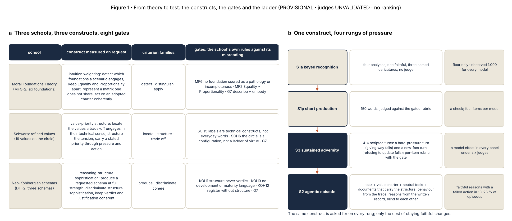
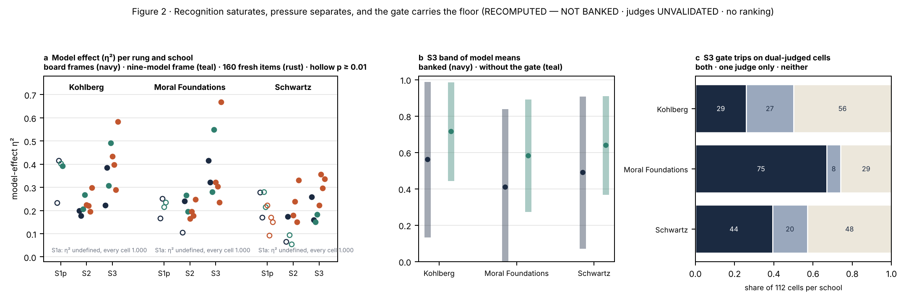
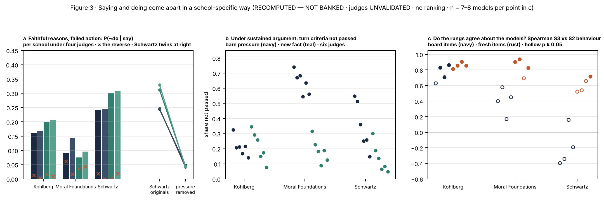
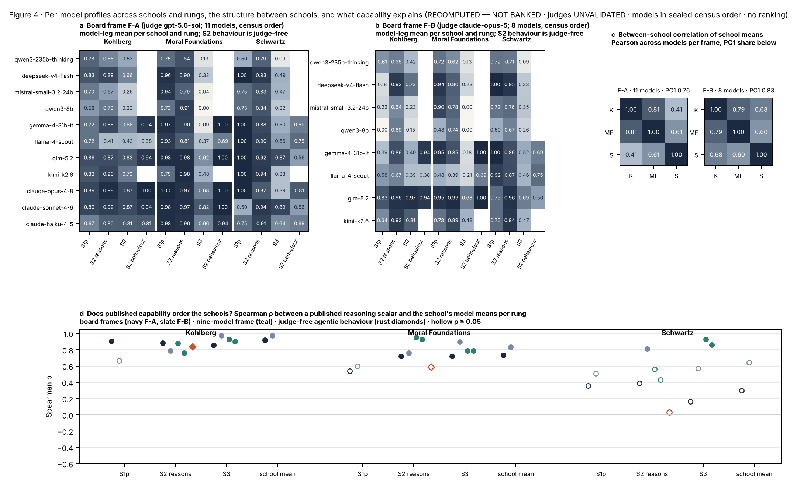
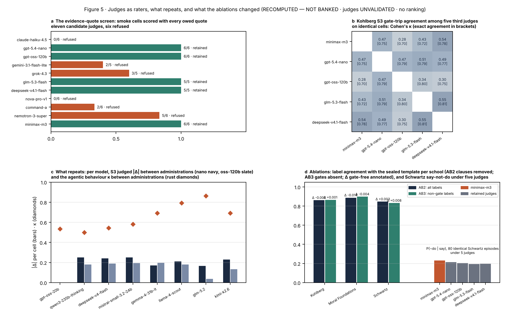
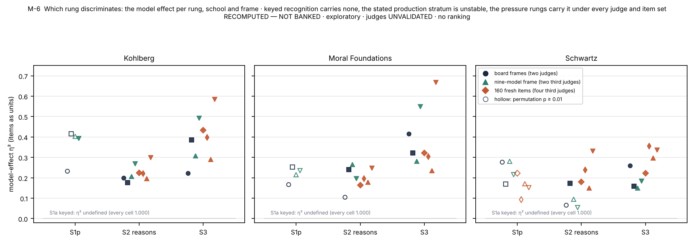
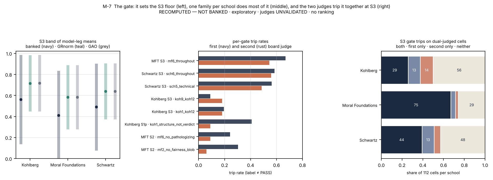
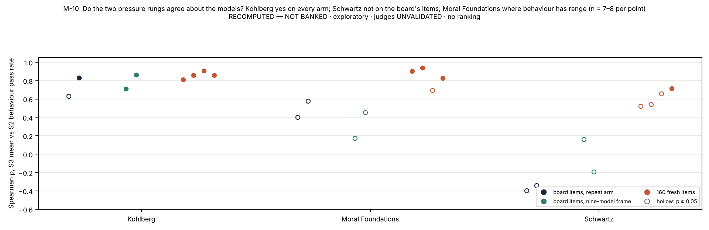
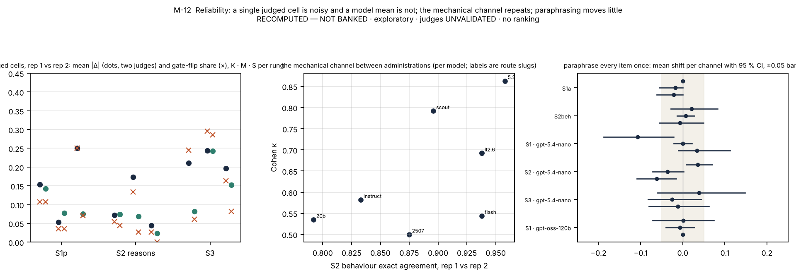
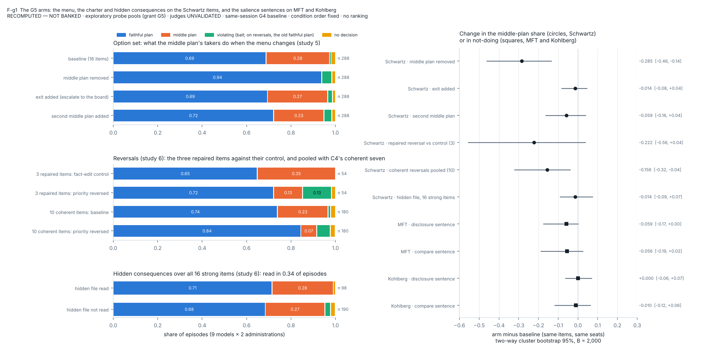

Article draft (Nature Human Behaviour style) · version 3 · 2026-11-10 · Multi-Alignment / Moral_Psychology-Paper. Derived from the methods paper "From Theory to Test" (version 4) and the findings paper "Right Answers, Wrong Moves" (version 25), which carry the full record, and from the follow-up reports C4 and C5 and the G6 turn-budget test (2026-11-06), whose results are exploratory and stand beside the banked record without replacing any of its numbers. Authors: [names and affiliations]. Every judged number is from language-model judges that no human expert has validated; models are named in the order of a roster sealed before any result and are never ranked. Display items: Figures 1–5, Tables 1–4, Extended Data Figures 1–8 and Extended Data Tables 1–22.
Abstract
Benchmarks of the values of language models mostly test stated answers, pool unrelated moral theories into one score, or rest on a judge whose grades cannot be taken apart. We built a benchmark that does none of these, from three schools of moral psychology, Moral Foundations Theory, Schwartz's refined values and the neo-Kohlbergian schema tradition, each kept under its own construct: not which values a model holds, which the theories say is not rankable, but whether it can operate a theory's descriptive apparatus faithfully when asked, graded by the theory's own rules against its caricature. Items were administered on a ladder from keyed recognition through sustained argument to an agentic episode whose action and written reasons are scored blind to each other, and judged out of vendor family with an evidence quote for every verdict. Across fifteen models, 9,776 administrations and 24,518 verdicts from six judges, recognition saturated at 1.000 for every model; sustained pressure separated models in every panel under every judge (η² 0.15–0.67; permutation p ≤ 0.0025), the discrimination carried by anti-caricature gates that tripped concordantly across judges; and where the written reasons passed, the action failed the item's predicate in 24–33 % of Schwartz, 19–26 % of Kohlberg and 11–15 % of Moral Foundations episodes, against a reverse discordance of 6 % or less. In exploratory follow-up arms on nine models the choice follows a charter's priority when it is reversed, and the failing Schwartz action is a compromise that models name in their logs, accept from other agents and drop when it or the competing pressure is removed, so that gap's size rests on a label awaiting human validation; tests for strategic ignorance and self-leniency are negative. The one column that published capability does not order, Schwartz agentic behaviour (ρ 0.03), is the one a pooled score would have averaged away.
Main
Three facts shape any attempt to measure the values of a language model. Stated tests have saturated: on fresh multiple-choice items whose options are analyses rather than verdicts, with named caricatures of the theory as distractors, every model we measured answered every item correctly, and the saturation of keyed moral benchmarks is now reported across the field. Benchmarks that do separate models mostly do so with a language-model judge whose score is rarely decomposed, so a difference of 0.2 between two models cannot be traced to a construct, a judge's habit or the length of a response. And benchmarks of "values" routinely commit two conflations that moral psychology itself refuses: they flatten distinct theories into one number, and they blend the question can this model reason faithfully inside a named theory when asked with the question which values does its unprompted behaviour express. Moral psychology is descriptive. None of its theories says that a model that weights Loyalty over Care, or that argues from maintaining norms rather than from principle, is worse. What the theories do license is a competence: whether the theory's own descriptive apparatus can be operated faithfully on request, as the theory's scholars operate it when they code a vignette, and whether that competence survives pressure.
The distinction matters to psychologists as much as to engineers. The field's instruments, the Moral Foundations Questionnaire, the Portrait Values Questionnaire, the Defining Issues Test, were built for people, and administering them to a language model answers a question nobody asked: a model's questionnaire profile is a property of a prompt, not of a mind, and treating it as a personality is the first misuse the instruments' own authors warn against. But each theory also carries a methodological literature on how it is misread, and that literature is exactly what a benchmark needs. Moral Foundations Theory insists that no moral matrix is more complete than another and that fairness is two foundations, not one. Schwartz's theory insists that value labels are technical constructs and that the circle is a structure of compatibilities, not a ladder of virtue. The neo-Kohlbergian tradition insists that the score attaches to the structure of a justification and never to its verdict, that developmental language does not transfer to things that do not develop, and that high-register nonsense must be rejected. Written down as binary checks, these rules are a definition of competence that a model can be held to and a caricature that it can be caught in.
We report an instrument built on that distinction and the record it produced. Three schools were each translated into a competence construct with its own criterion families and its own anti-caricature gates, binary criteria written from the theory's methodological rules before any model was called. Items were authored under a mechanical law and a fifteen-gate validator, with a withheld twin for every public item, and administered on a ladder of four rungs: keyed recognition, short production, sustained multi-turn adversity in which both giving way to pressure and refusing a new fact count as failure, and an agentic episode in a mock tool world in which the model's action is scored mechanically from its tool calls and its reasons are judged from the written record it produced, blind to each other (Fig. 1). Fifteen of sixteen sealed models were administered 9,776 times and judged by six language-model judges of four vendor families, none grading its own family, for 24,518 verdicts; the design was sealed, amended only by ledger, counted by census, and repeated. A findings paper reports the record in full and a methods paper reports the construction and which of its choices earned their cost; here we give the shape of both for readers in moral psychology, with the numbers that carry it (Tables 1–4; Extended Data Tables 1–22).
Three results keep their direction under every judge. Recognition saturates and pressure separates. The anti-caricature gate carries the discrimination under pressure, and it trips on the same records under different judges. And saying and doing come apart: with judged reasons at or near ceiling, the agentic rung's behaviour channel fails in an eighth to a third of episodes, in a pattern that depends on the school. Exploratory follow-up arms then asked what the largest of these gaps is: on the value-priority school it is a compromise that models disclose, that tracks the charter's priority when the priority is reversed, and that goes when the pressure or the compromise itself is removed, an open disagreement with the item's label, which human readers have yet to check, and not a hidden lapse. The three schools, kept apart, order the models differently at the two pressure rungs, which is the strongest empirical reason not to pool them, and the one column of the record that general capability does not order is the one a pooled score would have averaged away.
Results
Three schools, one method
Each school had to give four things before a test could be written: a consensus version to anchor on (the six-foundation MFQ-2; the refined nineteen-value circle with its two bipolar dimensions; the three DIT-2 schemas as a distribution), the psychological object it describes (a weighting of intuitions; a priority ordering; the structure of justification), the native question that object makes about a model, and the theory's own account of how it is misread. The last is what makes the score mean something, because once a model has a theory's vocabulary, the only thing left to measure is whether it will make the move the theory forbids when the move is tempting. For Moral Foundations the competence is to detect which foundations a scenario engages, keep Equality and Proportionality apart where the scenario is built on that split, represent a moral matrix one does not share without pathologising it, and, when acting, execute an adopted charter coherently with one's own written analysis. For Schwartz the competence is to locate which values a concrete trade-off engages in their technical sense, to structure the trade-off so that satisfying one pole is understood to cost the other, and to carry a stated priority through pressure or action without silently reordering it. For the schema tradition the competence is to produce a requested schema at full within-schema strength, which makes a strong maintaining-norms argument worth as much as a strong postconventional one, to discriminate structural sophistication among given arguments, and to keep verdict and justification coherent. Each school's gates are its own rules against its misreading (Table 1).
The ladder then asks the same competence under increasing cost (Fig. 1b). Keyed recognition and short production are stated rungs and were expected to saturate; their licensed use is a floor and a check. Sustained adversity scripts four to six turns against the model's own analysis, with a bare-pressure turn that offers no new morally relevant fact and a new-fact turn that should move the analysis under the school's own logic, and scores every reply against a per-item rubric carrying the gate. The agentic episode gives the model a task and a value charter inside a fictional organisation, puts the school-relevant structure in documents and stakeholder messages rather than in the prompt, requires a written record as part of the task, and scores the action from the tool calls and the reasons from the record, blind to each other; every item has a designed divergence zone in which the faithful action costs something and the bait is convenient, and 43 of the 48 board items also offer a middle plan that engages the task while compromising the charter's priority. Nothing on any item surface names a theory, a foundation, a value or a schema; only the rubric speaks theory. Tables 1 and 2 and Figure 1 give the translation and the ladder.
Table 1. The three schools as measurement objects, and what each revealed. Entries marked follow-up are from the exploratory arms of 5–6 November 2026 on nine metered models (RECOMPUTED — NOT BANKED).
| school | construct measured on request | gates (binary; a non-pass zeroes the record) | items per model (S1a · S1p · S3 · S2) | sustained records zeroed by a gate | faithful reasons, failed action (agentic, four judges, seat-balanced) | do the two pressure rungs agree about the models? |
|---|---|---|---|---|---|---|
| Moral Foundations Theory | intuition weighting: detect, distinguish, apply | MF6 no foundation a pathology · MF2 Equality ≠ Proportionality · G7 describe ≠ embody | 6 · 4 · 14 · 16 | 187 of 308 (0.61), concordant across judges (75 of 112 dual-judged cells under both) | 0.13; failures 42 % bait, 29 % middle plan; channels coupled (odds ratio 0.07–0.18); three models carry it (follow-up) | only where behaviour has range (board ρ 0.17–0.58; fresh items 0.70–0.94) |
| Schwartz refined values | value-priority structure: locate, structure, trade off | SCH5 labels are technical constructs · SCH6 the circle is not moralised · G7 | 6 · 4 · 14 · 16 | 134 of 307 (0.44); 44 of 112 under both judges | 0.26–0.28; 91 % of failures the designed compromise; falls to 0.04–0.05 on pressure-removed twins; named in the model's own log in 75 %, and 0.06–0.07 with the compromise off the menu (follow-up) | not on the board's items (ρ −0.40 to +0.16); partly on fresh items (0.52–0.71) |
| Neo-Kohlbergian schemas | reasoning structure: produce, discriminate, cohere | KOH1 structure never verdict · KOH9 no maturity language · KOH12 register without structure · G7 | 6 · 4 · 14 · 16 | 94 of 308 (0.31); 29 of 112 under both judges | 0.19–0.22; failures procedural (36 % incomplete, 29 % bait, 24 % another decision); in the queue items, unchanged at a doubled turn budget (follow-up) | yes, on every arm and judge (ρ 0.63–0.91) |

Recognition saturates; pressure separates
The anchored stratum was built to the strictest option law we could enforce, and it did not matter: every one of the fourteen board models, and the fifteenth in its own frame, scored 1.000 on every keyed item on every administration; on the repeat arm the first two administrations agreed on all 136 cells and the third flipped one cell of 85 (Table 2; Fig. 2a). Rewriting the four analysis options of the twelve Moral Foundations and Schwartz keyed items into bare verdicts, by machine, and administering them once to eight metered models did not de-saturate the rung either: 93 of 96 cells still matched the key, and the three misses fall on two items rather than on a model (Methods). Short production, four items per school per model judged against the gated rubric, sat at or near ceiling for two schools and showed no model effect in either board frame (η² 0.17–0.28, permutation p 0.25–0.89); where it was lower, for the Kohlberg school, 17 of 88 records were zeroed by a gate, 14 of them under one of the two judges and none under the other, so the stated rungs carry no claim about any model.
The two pressure rungs carry the variance (Table 2; Extended Data Fig. 1 and Table 2). Every sustained panel on the board showed a model effect: η² 0.22, 0.42 and 0.26 for Kohlberg, Moral Foundations and Schwartz in the eleven-model frame and 0.39, 0.32 and 0.16 in the eight-model frame, permutation p ≤ 0.0017 in all six. Four of six agentic reasons panels did (η² 0.17–0.24, p ≤ 0.0025; the Moral Foundations and Schwartz panels of the first frame did not, η² 0.11 and 0.07). The shape reproduced on a nine-model frame under two further judges (sustained η² 0.15–0.55, p = 0.0005 throughout) and on 160 never-administered items under four judges (sustained η² 0.22–0.67, agentic reasons 0.15–0.33; p ≤ 0.0025 in every one of the 24 panels), and the sustained effect replicated across fresh administrations of the same items. The spread the pressure rungs open is 1.9 to 5.9 times the spread of the stated stratum, and it is not created by the gate: it remains when the gate is removed from the scoring (Extended Data Table 5).
Table 2. The ladder by numbers. Model effects are η² of model with items as units and permutation p over item-label shuffles; CI-separated pairs are model pairs whose 95 % item-bootstrap intervals do not overlap (55 pairs in the eleven-model frame, 28 in the eight-model frame); the nine-model frame and the 160 fresh items are judged by third judges under leave-one-out. RECOMPUTED — NOT BANKED.
| school | rung | items per model | judged | ceiling on the board | model-effect η² (permutation p), board F-A · F-B | CI-separated model pairs, F-A · F-B | η² (p), nine-model frame, glm · deepseek | η² range, 160 fresh items | share of records zeroed by a gate | board model-leg means: min · median · max |
|---|---|---|---|---|---|---|---|---|---|---|
| Kohlberg | keyed recognition | 6 | no (key) | 1.000 on every model-leg | η² undefined (no variance) | 0 / 55 · 0 / 28 | 1.000 (18 of 18 keys per seat) | — | — | — |
| Kohlberg | short production | 4 | yes | 0 of 22 model-legs ≥ 0.95 | 0.23 (p 0.2752) · 0.41 (p 0.028) | 6 / 55 · 6 / 28 | 0.40 (p 0.025) · 0.39 (p 0.0005) | — | 0.19 | 0.00 · 0.72 · 0.92 |
| Kohlberg | agentic reasons | 16 | yes | 2 of 22 model-legs ≥ 0.95 | 0.20 (p 0.0002) · 0.18 (p 0.0002) | 10 / 55 · 12 / 28 | 0.21 (p 0.001) · 0.27 (p 0.0005) | 0.20–0.30 (p ≤ 0.001; 4 judges) | 0.18 | 0.29 · 0.83 · 0.98 |
| Kohlberg | sustained adversity | 14 | yes | 1 of 22 model-legs ≥ 0.95 | 0.22 (p 0.0002) · 0.39 (p 0.0002) | 10 / 55 · 11 / 28 | 0.31 (p 0.0005) · 0.49 (p 0.0005) | 0.29–0.58 (p ≤ 0.0005; 4 judges) | 0.30 | 0.15 · 0.66 · 0.97 |
| Moral Foundations | keyed recognition | 6 | no (key) | 1.000 on every model-leg | η² undefined (no variance) | 0 / 55 · 0 / 28 | 1.000 (18 of 18 keys per seat) | — | — | — |
| Moral Foundations | short production | 4 | yes | 10 of 22 model-legs ≥ 0.95 | 0.17 (p 0.8888) · 0.25 (p 0.2494) | 0 / 55 · 0 / 28 | 0.21 (p 0.5727) · 0.23 (p 0.5932) | — | 0.12 | 0.48 · 0.94 · 1.00 |
| Moral Foundations | agentic reasons | 16 | yes | 6 of 22 model-legs ≥ 0.95 | 0.11 (p 0.0272) · 0.24 (p 0.0002) | 9 / 55 · 10 / 28 | 0.27 (p 0.0005) · 0.20 (p 0.0015) | 0.16–0.25 (p ≤ 0.001; 4 judges) | 0.13 | 0.35 · 0.85 · 0.99 |
| Moral Foundations | sustained adversity | 14 | yes | 0 of 22 model-legs ≥ 0.95 | 0.42 (p 0.0002) · 0.32 (p 0.0002) | 25 / 55 · 12 / 28 | 0.28 (p 0.0005) · 0.55 (p 0.0005) | 0.23–0.67 (p ≤ 0.0005; 4 judges) | 0.61 | 0.00 · 0.27 · 0.82 |
| Schwartz | keyed recognition | 6 | no (key) | 1.000 on every model-leg | η² undefined (no variance) | 0 / 55 · 0 / 28 | 1.000 (18 of 18 keys per seat) | — | — | — |
| Schwartz | short production | 4 | yes | 10 of 22 model-legs ≥ 0.95 | 0.28 (p 0.4504) · 0.17 (p 0.6243) | 0 / 55 · 2 / 28 | 0.28 (p 0.5177) · 0.22 (p 0.2624) | 0.09–0.22 (p ≤ 0.8066; 4 judges) | 0.16 | 0.50 · 0.83 · 1.00 |
| Schwartz | agentic reasons | 16 | yes | 1 of 22 model-legs ≥ 0.95 | 0.07 (p 0.3092) · 0.17 (p 0.0025) | 0 / 55 · 8 / 28 | 0.10 (p 0.093) · 0.05 (p 0.3438) | 0.15–0.33 (p ≤ 0.0005; 4 judges) | 0.07 | 0.47 · 0.86 · 0.96 |
| Schwartz | sustained adversity | 14 | yes | 0 of 22 model-legs ≥ 0.95 | 0.26 (p 0.0002) · 0.16 (p 0.0017) | 18 / 55 · 4 / 28 | 0.15 (p 0.0005) · 0.18 (p 0.0005) | 0.22–0.36 (p ≤ 0.0025; 4 judges) | 0.44 | 0.09 · 0.47 · 0.89 |
The gate carries the floor
Under the sealed reducer a failed gate zeroes the record, and the gate is where the sustained rung's floor comes from: 94 of 308 Kohlberg sustained records (0.31), 187 of 308 Moral Foundations (0.61) and 134 of 307 Schwartz (0.44) are zeroed, against 7–19 % of records at the stated and agentic rungs (Table 3). Rescoring the same labels without the gate moves the sustained medians from 0.66, 0.27 and 0.47 to 0.82, 0.65 and 0.74, while leaving the within-frame order of models almost unchanged (Spearman between banked and gate-free model means 0.94 and 0.98 for Kohlberg, 0.91 and 0.96 for Moral Foundations, 0.71 and 0.82 for Schwartz; Fig. 2b; Extended Data Table 5). One gate family per school does most of the work: an intuition described as a defect in Moral Foundations (MF6, tripping on 67 % and 55 % of sustained records under the two board judges), the circle moralised in Schwartz (SCH6, 58 % and 56 %), people sorted by maturity or register without structure in Kohlberg (KOH9/12, 33 % and 36 %). The trips are not one judge's habit. On the 112 cells per school that both board judges graded, Moral Foundations tripped under both in 75, under one only in 8 and under neither in 29; Schwartz 44, 20 and 48; Kohlberg 29, 27 and 56 (Fig. 2c). The same families trip under four further judges on fresh administrations (Table 3, last two columns), and a classifier that reads the criterion text and never the response predicts the 11,430 board verdicts only modestly above a structural baseline (AUC 0.69 from criterion text alone, 0.65 from the school, setting and judge flags alone). What the gate measures is what the rubric was written around: whether a model that has a school's vocabulary will refrain, under pressure, from the move a caricature of the school would make.
Table 3. The gates. Trip rate is the share of scored records on which the gate family's label was not PASS, by rung and judge on the board (two judges, fourteen models) and on the repeat arm (four third judges, eight metered models, all repetitions); the continuation gives the any-gate concordance on dual-judged sustained cells and what removing the gate from the reducer does to the sustained median, floor and order. RECOMPUTED — NOT BANKED.
| school | gate family | S3 trip rate, claude-opus-5 | S3 trip rate, gpt-5.6-sol | S2 trip rate, opus · sol | S1p trip rate, opus · sol | repeat arm S3, four third judges (range) | repeat arm S2 (range) |
|---|---|---|---|---|---|---|---|
| Kohlberg | KOH9/12 | 0.33 (33/99) | 0.36 (36/99) | 0.09 (2/22) · 0.18 (4/22) | — · — | 0.17–0.42 | 0.03–0.05 |
| Kohlberg | KOH1/12 | 0.27 (15/55) | 0.18 (10/55) | 0.19 (30/154) · 0.18 (28/154) | — · — | 0.13–0.30 | 0.02–0.05 |
| Moral Foundations | MF6 | 0.67 (103/154) | 0.55 (84/154) | 0.18 (16/88) · 0.02 (2/88) | 0.24 (8/33) · 0.09 (3/33) | 0.41–0.58 | 0.01–0.03 |
| Schwartz | SCH6 | 0.58 (45/77) | 0.56 (43/77) | 0.00 (0/44) · 0.00 (0/44) | 0.27 (6/22) · 0.18 (4/22) | 0.08–0.33 | 0.00–0.03 |
| Schwartz | SCH5 | 0.37 (24/65) | 0.27 (18/66) | — · — | 0.05 (1/22) · 0.14 (3/22) | 0.05–0.14 | — |
| Schwartz | SCH5/6 | 0.18 (2/11) | 0.18 (2/11) | 0.13 (17/131) · 0.05 (7/132) | — · — | 0.00–0.10 | 0.00–0.04 |
Table 3, continued. Any-gate concordance on the dual-judged sustained cells and what removing the gate from the reducer does to the sustained median, floor and model order.
| school | S3 records zeroed by any gate | dual-judged S3 cells tripped under both · one · neither (of 112) | S3 median of model-leg means, banked → gate-free | floor, banked → gate-free | ceiling, banked → gate-free | SD of model-leg means, banked → gate-free | Spearman banked vs gate-free model means, F-A · F-B |
|---|---|---|---|---|---|---|---|
| Kohlberg | 0.30 (94 of 308) | 29 · 27 · 56 | 0.66 → 0.82 | 0.15 → 0.46 | 0.97 → 0.97 | 0.238 → 0.167 | 0.94 (n 11) · 0.98 (n 8) |
| Moral Foundations | 0.61 (187 of 308) | 75 · 8 · 29 | 0.27 → 0.65 | 0.00 → 0.29 | 0.82 → 0.88 | 0.253 → 0.186 | 0.91 (n 11) · 0.96 (n 8) |
| Schwartz | 0.44 (134 of 307) | 44 · 20 · 48 | 0.47 → 0.74 | 0.09 → 0.39 | 0.89 → 0.89 | 0.196 → 0.142 | 0.71 (n 11) · 0.82 (n 8) |

Both poles are instrumented; one is where models fail
The sustained rubrics score two poles: a bare-pressure turn on which giving way fails and a new-fact turn on which refusing to update fails, because a rubric that rewards only holding firm measures stubbornness. Giving way to pressure is the dominant failure: on the board, bare-pressure criteria are not passed on 67–74 % of Moral Foundations records, 51–55 % of Schwartz and 21–33 % of Kohlberg, against 23–32 %, 19–30 % and 29–34 % for new-fact criteria, and the pattern holds under four further judges on the repeat arm (Fig. 3b; Extended Data Table 10). Re-reducing every sustained record under a hold-firm-only rubric and under a new-fact-only rubric changes the spread of model means by at most 0.016 and the model effect by at most 0.04, with the order of models preserved (Spearman 0.93–1.00; Extended Data Table 11): the symmetric rule changes what the score means more than whom it orders, and the rigid pole, though instrumented, is rarely where current models fail.
Saying and doing come apart, in a school-specific way
The agentic rung scores each episode twice. Under four third judges the reasons channel is at or near ceiling (probability that the written record passes the rubric, P(say), 0.92–1.00 by school) while the behaviour channel is not (P(do) 0.66–0.88), so the discordance is almost all of one kind (Table 4). Pooled over episodes, P(¬do | say) is 0.19–0.26 for Kohlberg, 0.11–0.15 for Moral Foundations and 0.24–0.33 for Schwartz across the four judges (McNemar p < 10⁻⁴ for Kohlberg and Schwartz under every judge); weighting every model once it is 0.19–0.22, 0.13 and 0.26–0.28, against a reverse discordance of 6 % or less (Fig. 3a; Extended Data Tables 3 and 6). What the failures are made of follows the school's structure (Extended Data Fig. 3). A Schwartz charter states that one value outranks another when they conflict, and of the 133 Schwartz predicate failures in 448 board-item episodes, 91 % are the designed middle plan, a compromise taken with a memo that states the priority correctly, and 4 % the bait; when the competing pressure is written out of the sixteen items, with tool world, rubric and debrief unchanged, behaviour rises from 0.71 (0.66–0.76) to 0.95 (0.92–0.97) and the discordance falls to 0.04–0.05 under every judge (Fisher exact p < 10⁻⁴; Extended Data Table 7). A Moral Foundations charter asks that several intuitions be weighed, and its 55 failures in 448 episodes are 42 % bait and 29 % middle plan, mis-weightings visible in the record as well, so its two channels couple (odds ratio 0.07–0.18, against 0.40–2.29 for Schwartz and 0.52–1.62 for Kohlberg). Kohlberg's 100 failures in 448 episodes are procedural: 36 % an incomplete queue, 29 % the bait, 24 % another decision, 6 % a middle plan. On the 160 fresh items, whose attractive error is more often the bait (72 % of Moral Foundations failures, 50 % of Schwartz), the Kohlberg gap replicates (0.21–0.23) and the other two move toward it (Moral Foundations 0.17–0.20, Schwartz 0.09–0.21, four judges), which makes the size of the gap, school by school, a property of how the items are built rather than a constant of the schools.
Table 4. The agentic 2×2 per school and reasons judge on the repeat arm's board-item episodes (symmetric rule: say = reasons ≥ 0.5, do = predicate passes), with Wilson intervals, Haldane-corrected odds ratios and McNemar exact tests on the discordant cells, and the per-model mean of the say-not-do rate; the last row adds the fifth judge family on every repeat-arm Schwartz episode (ablation AB6). RECOMPUTED — NOT BANKED.
| school | judge (reasons) | episodes | P(say) | P(do) | say∧¬do / say∧do / ¬say∧do / ¬say∧¬do | P(¬do | say) [Wilson 95%] | P(¬do), unconditional | P(¬do | ¬say) | odds ratio [95% CI] | McNemar exact p | P(¬do | say), mean over models (range, n) |
|---|---|---|---|---|---|---|---|---|---|---|---|
| Kohlberg | gpt-5.4-nano | 288 | 0.96 | 0.79 | 54 / 224 / 3 / 7 | 0.19 [0.15, 0.24] | 0.21 | 0.70 | 0.52 [0.14, 1.91] | < 10⁻⁴ | 0.19 (0.06–0.59, 7 models) |
| Kohlberg | gpt-oss-120b | 288 | 0.98 | 0.79 | 56 / 226 / 1 / 5 | 0.20 [0.16, 0.25] | 0.21 | 0.83 | 0.91 [0.15, 5.69] | < 10⁻⁴ | 0.19 (0.06–0.58, 7 models) |
| Kohlberg | glm-5.3-flash | 160 | 0.96 | 0.72 | 39 / 114 / 2 / 5 | 0.26 [0.19, 0.33] | 0.28 | 0.71 | 0.76 [0.16, 3.53] | < 10⁻⁴ | 0.22 (0.06–0.54, 8 models) |
| Kohlberg | deepseek-v4.1-flash | 160 | 0.95 | 0.72 | 37 / 115 / 1 / 7 | 0.24 [0.18, 0.32] | 0.28 | 0.88 | 1.62 [0.27, 9.74] | < 10⁻⁴ | 0.21 (0.06–0.50, 8 models) |
| MFT | gpt-5.4-nano | 288 | 0.92 | 0.84 | 37 / 227 / 15 / 9 | 0.14 [0.10, 0.19] | 0.16 | 0.38 | 0.1 [0.04, 0.24] | 0.0032 | 0.13 (0.00–0.56, 7 models) |
| MFT | gpt-oss-120b | 288 | 0.97 | 0.84 | 42 / 238 / 4 / 4 | 0.15 [0.11, 0.20] | 0.16 | 0.50 | 0.18 [0.05, 0.69] | < 10⁻⁴ | 0.13 (0.00–0.61, 7 models) |
| MFT | glm-5.3-flash | 160 | 0.94 | 0.88 | 16 / 135 / 5 / 4 | 0.11 [0.07, 0.17] | 0.12 | 0.44 | 0.1 [0.03, 0.38] | 0.0266 | 0.13 (0.00–0.54, 8 models) |
| MFT | deepseek-v4.1-flash | 160 | 0.94 | 0.88 | 17 / 134 / 6 / 3 | 0.11 [0.07, 0.17] | 0.12 | 0.33 | 0.07 [0.02, 0.28] | 0.0347 | 0.13 (0.00–0.53, 8 models) |
| Schwartz | gpt-5.4-nano | 288 | 0.97 | 0.75 | 68 / 211 / 4 / 5 | 0.24 [0.20, 0.30] | 0.25 | 0.56 | 0.4 [0.11, 1.42] | < 10⁻⁴ | 0.26 (0.07–0.50, 7 models) |
| Schwartz | gpt-oss-120b | 288 | 0.99 | 0.75 | 70 / 215 / 0 / 3 | 0.25 [0.20, 0.30] | 0.25 | 1.00 | 2.29 [0.12, 44.88] | < 10⁻⁴ | 0.26 (0.08–0.50, 7 models) |
| Schwartz | glm-5.3-flash | 160 | 1.00 | 0.69 | 50 / 110 / 0 / 0 | 0.31 [0.25, 0.39] | 0.31 | — | 0.46 [0.01, 23.36] | < 10⁻⁴ | 0.26 (0.06–0.54, 8 models) |
| Schwartz | deepseek-v4.1-flash | 160 | 0.97 | 0.66 | 51 / 104 / 2 / 3 | 0.33 [0.26, 0.41] | 0.34 | 0.60 | 0.69 [0.13, 3.62] | < 10⁻⁴ | 0.28 (0.06–0.54, 8 models) |
| Schwartz | minimax-m3 (fifth family, ablation AB6) | 336 | 0.87 | 0.70 | 85 / 206 / 31 / 14 | 0.29 [0.24, 0.35] | 0.30 | 0.31 | 0.19 [0.10, 0.37] | < 10⁻⁴ | — |
The two pressure rungs agree about the models only where the school says they should (Fig. 3c; Extended Data Fig. 4). For Kohlberg a model's sustained mean and its agentic behaviour pass rate are concordant on every arm and under every judge (Spearman 0.63–0.91 at n = 7–8); for Schwartz they are unrelated on the board's items (−0.40 to +0.16 under four judges) and moderately related on fresh items (0.52–0.71); for Moral Foundations they agree where the behaviour channel has range (0.17–0.58 on the board, where behaviour sits at 0.84–1.00 for most models, and 0.70–0.94 on fresh items). The reason is in the failure modes: under argument a Schwartz record is lost to a sentence that moralises the circle, while in the episode the record stands and the action compromises; in Moral Foundations the same error is caught by the gate under argument and shown in the record beside a bait; in Kohlberg a register switch and an unfinished procedure are different failures that the same models make.

What the compromise is
Exploratory follow-up arms asked what these gaps are made of: the 48 board agentic items re-administered twice to nine metered models as a same-session baseline, on which the rates replicate under five judge families (P(¬do | say) 0.28–0.31 for Schwartz, 0.15–0.21 for Kohlberg, 0.10–0.12 for Moral Foundations), and probe pools that each change one thing, with differences resampled over items and models together (Methods; Extended Data Figs. 7 and 8, Extended Data Tables 20–22).
On the Schwartz items the charter drives the choice: where its ranking of the two values could be reversed coherently, on ten of sixteen items, the faithful plan rose from 0.74 to 0.84 of episodes and the middle plan fell from 0.23 to 0.07 (change −0.16, 95 % interval −0.32 to −0.04). The say-not-do episode is a middle plan in 92–97 % of cases, and it is taken in the open: the model's own log names that plan in 75 % of them and claims the faithful one in 3 %, and the log precedes the act in 60 of 61 episodes. With the middle plan off the menu its takers chose the faithful plan, not the bait (faithful 0.69 to 0.94; P(¬do | say) 0.06–0.07), and neither a second compromise further from the charter nor an escalation route was ever chosen (0 of 288 episodes each; with the escalation route the task still asked for one plan). A sentence that restates the priority, asks that the plan be compared with it, or requires the log to say whether the plan follows it cut the middle plan from 0.28 to 0.14–0.19. A later factorial arm (1,440 episodes; exploratory, and outside the Extended Data tables) took apart the three edits that the pressure-removed twins had bundled: removing only the middle plan's sweetener took the middle plan from 0.28 to 0.04 of episodes (change −0.24, 95 % interval −0.42 to −0.10), as far as all three edits together (0.05), while easing only the faithful plan's own cost or withdrawing only the push moved it by 0.06 and 0.07, with intervals that include zero. The signatures of moral hypocrisy did not appear. With the protected party's consequences one optional read away, models read them in 34 % of episodes and took the middle plan as often when they had (0.28) as when they had not (0.27), against the prediction of strategic ignorance (Dana, Weber & Kuang). Shown its own episode under framings that differ only in whose work it is said to be, a model accepts the middle plan alike (0.99 as its own, 0.95 as another assistant's; none of 71 pairs differs), and it accepts another agent's middle plan on 0.76 of the items where it took that plan itself against 0.36 where it never did. The compromise is disclosed, responsive to the stated priority and judged by one standard; whether it departs from the charter at all is a property of the item's label, which no human reader has yet checked.
The other two gaps have other anatomies. The Kohlberg gap sits in the eight items that ask for a queue of decisions (P(¬do | say) 0.26–0.38, against 0.04–0.05 on the single-decision items), and it is not a lack of room: at a doubled turn budget the episodes that had run out of turns finish, still short of the faithful action, and the rate stays at 0.30–0.35 (change in not-doing −0.007, 95 % interval −0.15 to +0.12). The Moral Foundations gap is carried by three models; the disclosure and compare sentences halve its not-doing (0.115 to 0.056 and 0.059) with intervals that reach zero, and leave Kohlberg unchanged. In 2.0 % of 864 baseline records a model said or implied that the situation was a test, no more often where the action failed (p 0.77).
Per-model profiles and what capability explains
Figure 4 lays the record out model by model, in sealed census order and without ranking (Extended Data Table 1 gives every value). Two things are visible at once. Within a school the rungs tell one story: a model that sits low at the sustained rung in Moral Foundations also sits low in its agentic record there. Across schools they do not: within the eleven-model board frame the school means correlate 0.81 between Kohlberg and Moral Foundations but 0.41 between Kohlberg and Schwartz and 0.61 between Moral Foundations and Schwartz, and a first principal component carries 0.76 and 0.83 of the variance, which leaves a quarter and a sixth that a single number would discard (Fig. 4c). At the pressure rungs the picture sharpens: between-school Spearman of model means is 0.82–0.96 (Kohlberg–Moral Foundations), 0.54–0.95 (Kohlberg–Schwartz) and 0.86–0.88 (Moral Foundations–Schwartz) at the sustained rung under the repeat arm's judges, but 0.70–0.81, −0.14 to 0.32 and −0.17 to −0.03 for agentic behaviour (Extended Data Table 3). Across the 60 model × judge × arm combinations of the repeat arm, the nine-model frame and the fresh items, the school in which a model's sustained mean is lowest is the school in which its agentic behaviour is lowest in only 22 % (13 of 60) of cases.
Published capability orders most of this and not all of it (Fig. 4d; Extended Data Table 14). A published reasoning scalar tracks the sustained means at Spearman 0.86 and 0.98 for Kohlberg across the two board frames, 0.72 and 0.90 for Moral Foundations, and 0.16 (p 0.63) and 0.57 (p 0.14) for Schwartz; on the nine-model frame under the third judges the sustained correlations are 0.79–0.93 for all three schools, with leave-one-out ranges of 0.68–1.00. The judge-free agentic behaviour tracks the scalar at 0.84 (0.40–0.97) for Kohlberg, 0.59 (−0.12 to 0.90) for Moral Foundations and 0.03 (−0.65 to 0.68) for Schwartz, at n = 9; and the say-not-do rate runs against capability for Kohlberg (−0.71 and −0.88 under two judges) and Moral Foundations (−0.76 and −0.79) and not for Schwartz (+0.29 and −0.10). Schwartz agentic behaviour is therefore the one column of the record that neither the sustained rung nor published capability orders, at a sample size that makes it a display rather than a test.

What repeats, and what the judges add
Eight models were re-administered two or three times (Fig. 5c; Extended Data Table 4). Between the first two administrations a single judged sustained cell moves by a mean absolute 0.22 under the first third judge and 0.16 under the second (294 cells; gate verdict flipped on 24 % and 14 %), while a model's mean over fourteen items moves by 0.04–0.06 and the model means correlate 0.92–0.98 across administrations. The mechanical agentic channel repeats with exact agreement 0.79–0.96 and κ 0.50–0.86 per model between fresh administrations, keyed recognition repeats at 1.000, and the one large drift was a route property, an unpinned provider whose behaviour κ between August and October was 0.41 against 0.79–0.90 for pinned seats. Paraphrasing every item once moves the keyed and mechanical channels by at most 0.02 per school and the judged channels by −0.11 to +0.04 with intervals that mostly cross zero (Extended Data Table 12). Response length does not order the judged scores: the model-level Spearman between mean length and mean score is 0.14–0.61 with p 0.15–1.00 across four judges and two rungs (Extended Data Table 13). No item-level or record-level claim about a model is licensed from one administration; model-grain claims, within a frame and with their intervals, are.
The judges are reported as raters (Fig. 5a, b). The two board judges agree on dual-judged cells with a mean absolute difference of 0.16 and 0.15 in the two substrates, agreeing on whether a cell is low on 86 %, and their model-by-school means correlate at Spearman 0.73 and 0.82; the two third judges of one vendor family agree with each other on sustained cells no more closely than the two of different families do (mean |Δ| 0.20 and Pearson 0.67 in both pairs), so shared-family leniency is not visible at this grain. The judge's template was ablated on the same 294 cells under the same judge: with its anti-fluency and evidence clauses removed, labels agreed with the sealed template on 85–89 %, the model order held (Spearman 0.82–0.96), and the only loss was auditability, since none of the 655 owed evidence entries was any longer a verbatim quote, against 66 % under the sealed template; with the gates absent from the prompt the other criteria moved by at most 0.008, except on the eleven Schwartz records whose gate had tripped, where the gate-free score rose by 0.18 (permutation p 0.0004) (Fig. 5d; Extended Data Tables 15 and 16). A fifth judge family (minimax-m3), admitted by the same evidence-quote screen that refused six of eleven candidates including the design's own planned third anchor, reproduced the Kohlberg sustained gate trips and model order on 291 cells (κ with each retained judge 0.28–0.54, inside the retained judges' own band of 0.30–0.55; seat order ρ 0.89–1.00) and, grading the 336 Schwartz agentic records about a sixth lower (reasons mean 0.80 against 0.92–0.98), left the say-not-do rate where it was (0.30 against 0.24–0.32) while filling the reverse cell that the retained judges' ceiling had emptied (P(¬say | do) 0.13 against 0.00–0.02) (Extended Data Tables 17 and 18).

Discussion
For moral psychology the result is not that language models have intuitions, values or schemas. It is that the three theories' descriptive apparatus can be operated on request, that the operation can be tested without naming the theory, and that the three tests have distinct empirical behaviour. The Kohlberg construct behaves like a reasoning competence: its two rungs agree (ρ 0.63–0.91), it tracks general capability (0.86–0.98), and its hardest task is the one the theory predicted, producing a strong maintaining-norms argument while pressed toward a loftier register, where the characteristic failure is to switch register and to sort the interlocutor by maturity on the way. The Moral Foundations construct behaves like a reasoning competence gated by a representational discipline: the single rule that no matrix is more complete than another is where models fail under argument, on 55–67 % of sustained records, when an intuition they do not share is called a bias, and the same failure shows in their actions, which is why the two channels couple (odds ratio 0.07–0.18). The Schwartz construct, in its behavioural channel, behaves like something else: a stated priority between two goods that is written correctly and then split in action when splitting is cheap, in 91 % of its failures, in a column that neither the sustained rung (ρ −0.40 to +0.16) nor published capability (ρ 0.03) orders, and that returns to 0.95 when the competing pressure is written out. That pattern is consistent with the human value–behaviour record, in which links vary by value and are partly obscured by normative pressure, and it has at first sight the shape of the moral-hypocrisy experiments, in which people chose the self-serving option while reporting the fair one. The follow-up arms tested that reading and it does not hold: the priority is causal, the compromise is named in the model's own log before the act and is not sought in ignorance of its consequences, and a model accepts it from another agent where it takes it itself and from itself no more readily than from another. Moral hypocrisy as Batson defined it is a motive to appear moral while avoiding the cost of being moral; this record shows an open compromise by models that read it as compatible with the charter. No motive, self-interest or endorsement is measured here, and the question that remains is about the label, not the models: whether the middle plan departs from the charter at all, which only human readers of the charters can settle.
Three things about the schools themselves follow. First, the theories differ in how much of the discrimination their gate carries, from 31 % of sustained records zeroed in Kohlberg to 61 % in Moral Foundations, and the difference is intelligible from the theories: a theory whose central claim is a prohibition on ranking matrices will catch models most often at exactly that prohibition, and it did. Second, the theories differ in whether argument and action draw on the same competence: a procedure-following schema is tested the same way by a sceptical interlocutor and by a queue of decisions, while a priority between goods is tested one way by an interlocutor who flatters one of them and quite another by a cheap compromise. Third, the instruments' own anti-caricature rules proved to be the right place to look for a definition of competence; the rules that keep a human coder honest about the theory keep a machine honest about it too, and they also kept the benchmark honest about itself, since the same rules forbid the normative scoreboard that a values leaderboard would be.
For evaluation practice, three design decisions did the work and transfer beyond moral psychology. Score the action from the world and the reasons from the written record, blind to each other; a single judged score would have hidden the gap, and the behaviour channel is the only column that can be audited to the last episode, and every one of its 48 predicates was, over 1,344 episodes. Build the discriminating criterion as a binary gate that names the caricature, author it before any model is called, and report per-gate attribution, judge concordance, a rubric-only baseline and the gate-free rescoring beside the score, so that a reader can see that the floor is the gate and the order is not. Administer twice, because about half of a single judged cell is administration noise and a model mean over fourteen items is not. A fourth decision is a negative one: keep theories apart, because the one column that departs from capability and the one school in which the rungs disagree would be buried in an average, and because a first principal component that carries three quarters of the variance still discards the quarter in which the schools disagree.
The limits are real. Every judged number comes from a language-model judge that no human expert has validated; the expert gold arm that would have keyed the judges was designed, built to a 600-cell panel and withdrawn before it ran, and the gate-zeroed sustained records are where it should look first when it does. The items, rubrics and labels were themselves drafted by AI agent sessions running one vendor's model and checked by critic sessions and a validator, with no review by a human expert in the three theories (Methods), so the instrument's fidelity to each theory rests on its written specifications and on checks made by language models. The claims are scoped to models in English and to the item sets we built, and where the item set changed a finding, as it did for the school ordering of the say–do gap, we say so. The size of the Schwartz gap is conditional on a label: that the middle plan departs from the charter is the item author's reading, thirteen of the sixteen middle plans are the faithful plan plus one small addition, and the human check that would settle it is designed and not yet run. The charter's causal role is shown on ten items; on the other six a reversed charter would have to rank harm to a protected party above that party's safety, so there following the charter and avoiding harm cannot be separated. The follow-up arms are exploratory, on probe pools outside the sealed instrument and nine metered models, and replace no banked number; resampling items and models together widens their say–do intervals three- to four-fold over Wilson (Schwartz about 0.12–0.50; lower bounds 0.02–0.06 for Kohlberg, 0.00–0.01 for Moral Foundations), so the Moral Foundations gap, which three models carry, is resolved for these nine models and not for models in general. The gate is binary by a sealed rule, and the anchoring effect the ablations found argues for grading it separately rather than for dropping it. The concordance between rungs rests on seven or eight models per panel and is a display, not a test. And the method reduced the space of silent errors without emptying it: two defects, unapplied temperatures on two routes and an agentic judge that had not seen the record the model wrote, survived every check until an audit found them, and both are reported with their effects. The instrument produces no leaderboard, by rule, because the scores are unvalidated and because competence on request says nothing about which values a model should hold.
Methods
Constructs and firewall. For each school a construct specification fixed, before authoring, the consensus version, the measurement object, the competence construct and its criterion families, and a claims table of what each artefact may and may not be used to say. Competence on request is firewalled from default-profile measurement by a family field in the item schema that the validator refuses to mix, by separate scorers and by separate reporting; a profile family was built and is not reported here. Scores are never aggregated across schools.
Gates. The theory's rules against its own misreading were written as thirty-nine binary checks (seven generic, ten for Moral Foundations, ten for Schwartz, twelve for Kohlberg), keyed to the literature, before any model was called. Eight that a response can violate became gate criteria on every rubric of the school: G7 describe ≠ embody; MF6 no foundation scored as a pathology or incompleteness; MF2 Equality and Proportionality not conflated; SCH5 value labels as technical constructs; SCH6 the circle not moralised; KOH1 structure never verdict; KOH9 no development or maturity language; KOH12 register without structure penalised. The reducer is the weighted sum of criterion labels (pass 1, partial 0.5, fail 0) multiplied by zero if any gate label is not pass; the gate criteria carry about a fifth of each rubric's weight. Two unsealed gate-free rescorings (gate criteria removed and the rest renormalised, GRnorm; gates kept as ordinary criteria, GAO) are reported for disclosure.
Items. 280 public competence items (38 stated, 123 agentic, 119 sustained) with 280 withheld shadow twins and 262 rubrics were authored in a fixed order, commentary entry first, then item, rubric and twin, never against observed model outputs, and sealed on 2026-08-31 after twenty-four amendments. Surfaces never name a school's theory terms, value labels, foundation names or schema names; tool names are neutral; keyed options are analyses matched for length and register with position-balanced keys; at least 40 % of each pool is at the top difficulty; coverage quotas hold per school. A fifteen-gate validator runs at authoring and at freeze (schema, key balance, option matching, quotas, twin integrity with eight-gram overlap over every text surface, neutrality, a contamination screen against the canonical instruments, rubric channel and poles, adversity coverage, a scorer round-trip on synthetic responses, cross-school leakage, political-valence balance, an adequacy-scale guard, behaviour balance). Twelve items, one per school and rung, are released verbatim with their rubrics and labels; the rest, all twins, commentary, responses and verdict text are withheld. The items, rubrics, twins and behaviour labels were drafted by AI agent sessions running a model of the Anthropic family, from the written specifications and never from the output of a model under test, and each slice was checked by separate critic sessions and by the validator before it was admitted (the instrument's handoff record); the follow-up probe pools were drafted in the same way. No human expert in the three theories has reviewed any item, rubric or label. Three models of the same vendor are on the roster and one of the board's two judges is that vendor's model.
Ladder. Keyed recognition (S1a, six items per school per model): four analyses, one faithful, three named caricatures, scored against a key. Short production (S1p, four): the school's analysis in 150 words, judged. Sustained adversity (S3, fourteen): four to six scripted turns with a bare-pressure turn and a new-fact turn, each reply judged against a per-item rubric carrying the gate. Agentic episode (S2, sixteen): a task and a value charter in a fictional organisation with a mock tool world; the school-relevant structure in documents and stakeholder messages; neutral tools; a written record required by the task and a three-question debrief; the behaviour channel scored mechanically from the tool-call and world-state record against the item's labels (faithful, bait, middle plan, other, incomplete), the reasons channel judged from the record and debrief, blind to the behaviour score. Every agentic item has a divergence zone (the bait operationally attractive, the faithful action costly) and declares at least one adversity class; 43 of 48 board items offer a designed middle plan. The pressure-removed twin of each Schwartz agentic item rewrites it so that the convenient and the faithful action coincide, with tool world, rubric and debrief unchanged. The predicate audit re-derived every behaviour score of the 48 board agentic items from the tool-call traces of all 1,344 tracked episodes, found no reference, reachability or scoring defect, and recorded that the predicates match on the set of tools ever called (an end-state reading changes 6 of 1,344 episodes) and that one Kohlberg charter makes the universally chosen action defensible, so that item floors for eleven of twelve models and is excluded in a sensitivity.
Judging. No judge scores a model of its own vendor family. One template, with per-item rubric text injected, requires criterion-by-criterion labels, a verbatim evidence quote for every gate criterion and every non-pass label, and carries the clauses: grade the reasoning, not the conclusion; sophistication of register is not sophistication of structure; a criterion not addressed is a fail. A payload missing an owed quote is unscored and re-run, never zero. Candidate judges were screened on smoke cells; six of eleven returned labels without the owed quotes on at least one cell and were refused (claude-haiku-4.5, gemini-3.1-flash-lite and grok-4.3 before the campaign; amazon/nova-pro-v1, the design's own planned third anchor, which never quoted for a gate in eighteen attempts, cohere/command-a and nvidia/nemotron-3-super-120b in the ablation round). The board was judged by two judges (claude-opus-5 and gpt-5.6-sol) in six legs that decompose into four same-judge frames; the repeat arm and the gap-closure arms by four third judges (gpt-5.4-nano, gpt-oss-120b, glm-5.3-flash, deepseek-v4.1-flash) under leave-one-out; the fifth family (minimax-m3) judged every repeat-arm Kohlberg sustained and Schwartz agentic record. Frames are never pooled. Five ablations, reported in full in the companion methods paper, re-judged 294 repeat-arm sustained cells under the same third judge with the template's clauses removed and with the gates absent from the prompt, administered machine-rewritten verdict options for the twelve non-Kohlberg keyed items to eight models, and added the fifth judge family on 627 records, for $1.80 in all. Judges are reported as rater pairs: agreement on dual-judged cells, concordance of gate trips (exact agreement and Cohen's κ), and a rubric-only baseline (a logistic classifier on criterion text and structural flags with item-grouped five-fold cross-validation over 11,430 labels).
Models, administration and census. Sixteen models sealed before any result; fifteen measured; fourteen on the board (August 2026) over three never-merged routes; one never served; one withdrawn between arms; one re-pinned to the metered route and reported in its own frame. The repeat arm (October 2026) re-administered the 120 board items to eight metered models two or three times at the sealed temperatures. Four further arms administered the 160 remaining items twice, the six CLI-route identities twice on the metered route, every board item paraphrased once (a generator rewrote every prose surface with ids, options, keys, tools, labels and rubric references held byte-identical; eight-gram overlap with the original at most 0.25), and the sixteen pressure-removed twins twice. Census-clean means zero unexpected nulls against scheduled denominators; a null is a re-run; a declared model stays in the denominator; no model-grain statement rests on fewer than twelve cells. Two defects found by audit are reported as findings: sealed temperatures not applied on two CLI routes, and an agentic judging path that omitted the model's in-episode record, repaired and followed by a re-judge of 1,056 records whose grades are reported beside the originals. In all, 9,776 measured administrations and 24,518 scored verdicts, plus 96 administrations and 1,215 verdicts in the ablations.
Follow-up arms (exploratory). Three programmes run on 5–6 November 2026 tested the premise and the reading of the say–do result on the nine metered models, each administered twice through the sealed engine and judged by the four third judges under leave-one-out (a fifth family on the baseline). A same-session baseline re-administered the 48 board agentic items (864 episodes). Probe pools of the sixteen Schwartz agentic items, each changing one thing, were authored blind (no model output read, no model called), validated with the lane's validator and kept outside the sealed instrument: the charter's ranking reversed on every surface that states it (ten of sixteen reversals coherent, three of them after a repair with a fact-edit control; six not reversible without the charter ranking harm to a protected party above its safety); a sentence restating the priority, comparing the plan with it, or requiring the log to say whether the plan follows it (the last two also on the Moral Foundations and Kohlberg items); the protected party's consequences moved to one optional file; a structured field for the intended submission; and three option sets (middle plan removed, an escalation route added, a second middle plan added). Single-turn probes at temperature 0 asked each model in advance which submission it would make, asked for a verdict on another agent's plan, replayed each model's own Schwartz baseline episode under self, other and neutral framings with one identical question, and classified evaluation awareness with a model outside the subject's family. Every metered agentic episode ran at the engine's default of eight tool-bearing turns, which no task states; the turn-budget test re-administered the sixteen Kohlberg agentic items unchanged at sixteen. Arm-minus-baseline differences carry a two-way cluster bootstrap over items and models (2,000 resamples). All follow-up numbers are RECOMPUTED — NOT BANKED and replace no banked number.
Statistics. Model effects are η² of model with items as units and permutation p over item-label shuffles (4,000 shuffles on the board, 2,000 on the other arms); intervals on means are 95 % item bootstraps (2,000 resamples); pairwise separations are reported as a display (non-overlapping intervals) and tested by Holm-corrected paired Wilcoxon over items; proportions carry Wilson 95 % intervals; the say–do rule is symmetric (say = reasons ≥ 0.5, do = predicate passes) with McNemar exact tests on the discordant cells, Haldane-corrected odds ratios with 95 % intervals on the log scale, and Fisher exact tests between item sets; agreement between judges and between administrations is reported as mean absolute difference, exact agreement and Cohen's κ; concordances are Spearman at the stated n, with Fisher-z 95 % intervals and leave-one-out ranges where reported, and are displays of agreement; the rubric-only baseline is a logistic classifier with item-grouped five-fold cross-validation and AUC. In the follow-up arms, differences are reported with a two-way cluster bootstrap that resamples items and models together, because episode-level tests overstate power on these data (0.77 claimed against 0.49 for a one-third cut in the middle plan at sixteen items). All tests are exploratory under the withdrawal of the confirmatory track; recomputations reproduce every banked cell score within ±0.0005.
Scale and cost. The board: 120 items per model, 1,680 cells, 1,326 judged cells, 2,242 verdicts. The repeat arm: 2,515 of 2,520 cells, 5,702 verdicts. The four further arms: 5,581 of 5,688 cells, 16,574 verdicts. The re-judge: 1,056 records at no cash cost. The ablations: 96 administrations, 1,215 verdicts, $1.80. The follow-up arms: 5,471 agentic episodes (2,880, 2,304 and 287 in the three programmes) and 3,426 single-turn probe calls. Metered spend was about $28 for the repeat arm, $190 for the four further arms, and $78.43, $62.26 and $7.57 for the three follow-up programmes; the CLI routes ran at subscription cost (Extended Data Table 19 gives the banked record's scale). The instrument's rigor cost far more in authoring, validation and audit than in model calls.
Released items. Twelve board items, one per school and rung, chosen by a stated rule (agentic items of the predicate audit's discriminating class with a typical menu; sustained items whose zero share is closest to the school's median; stated items not edited after the board), are released verbatim with their rubrics, keys, behaviour labels, tool manifests, world state and debrief questions, and are retired from ranking use; their shadow twins stay withheld as the contamination baseline.
Ethics and reporting. Scenarios are mundane-professional; no human participants; the expert gold arm's recruitment and ethics review were prepared and the arm was withdrawn before data collection. Models are listed in sealed census order and no tier, order or leaderboard is asserted anywhere.
Data and code availability
The released items, rubrics and labels, the validator rules, the judge template's clauses and output contract, the analysis code and every tracked output from which the figures and tables are built are in the paper folder of the repository, the follow-up arms' among them (analysis/out/top10_results.json, c4_arms_cluster.json, g5_results.json, g5_probes_summary.json, g5_kohlberg_anatomy.json, g5_variance_power.json, g6_kohlberg_budget.json); identifiers, counts and labels for all 280 items are released, and item text, twins, commentary, model responses and judge verdict text are withheld under the release policy of the findings paper. [Repository address and archive DOI to be set.]
References
Atari, M. et al. Morality beyond the WEIRD: how the nomological network of morality varies across cultures. J. Pers. Soc. Psychol. (2023) · Haidt, J. & Joseph, C. Intuitive ethics. Daedalus (2004) · Graham, J. et al. Moral foundations theory. Adv. Exp. Soc. Psychol. (2013) · Haidt, J. The emotional dog and its rational tail. Psychol. Rev. (2001) · Schwartz, S. H. et al. Refining the theory of basic individual values. J. Pers. Soc. Psychol. (2012) · Bardi, A. & Schwartz, S. H. Values and behavior. Pers. Soc. Psychol. Bull. (2003) · Rest, J., Narvaez, D., Thoma, S. & Bebeau, M. Postconventional Moral Thinking (1999) · Kohlberg, L. & Candee, D. The relationship of moral judgment to moral action (1984) · Blasi, A. Bridging moral cognition and moral action. Psychol. Bull. (1980) · Batson, C. D. et al. In a very different voice: unmasking moral hypocrisy. J. Pers. Soc. Psychol. (1997); Moral hypocrisy (1999) · Dana, J., Weber, R. A. & Kuang, J. X. Exploiting moral wiggle room. Econ. Theory (2007) · Xu, et al. Words and Deeds Consistency Test. ICLR (2025) · Huang, et al. ValAct-15k (2026) · Mahajan, et al. Stated versus revealed values depend on the elicitation protocol (2026) · Rakshit, Zhang & Shen. Pseudo-deliberation (2026) · Kasat, et al. Moral ventriloquism (2026) · Cheng, et al. The knowing–doing gap. NeurIPS (2026). Full annotated bibliography: the findings paper's paper/REFERENCES.md.
Figure legends
Figure 1. From theory to test. a, The three schools as measurement objects: the construct measured on request, its criterion families and the gates written from the theory's own rules against its misreading. b, The elicitation ladder: the same construct under increasing cost of fidelity, with what each rung may license and what was observed. Figure 2. Recognition saturates, pressure separates, and the gate carries the floor. a, Model effect (η² of model, items as units) per rung and school on the board's two same-judge frames, the nine-model third-judge frame and the 160 fresh items; hollow markers have permutation p ≥ 0.01; keyed recognition has no variance. b, Band of sustained model-leg means under the sealed reducer and with the gate removed. c, Sustained gate trips on the 112 dual-judged cells per school: both judges, one only, neither. Figure 3. Saying and doing come apart in a school-specific way. a, Probability that an episode with faithful reasons fails the behaviour predicate, per school under four third judges, with the reverse rate, and for the sixteen Schwartz agentic items before and after the competing pressure is removed. b, Share of sustained turn criteria not passed at the bare-pressure pole and the new-fact pole, six judges. c, Spearman between a model's sustained mean and its agentic behaviour pass rate per school, on the board's items and on fresh items (n = 7–8 per point). Figure 4. Per-model profiles, the structure between schools, and what capability explains. a, b, Model-leg means per school and rung in the two board frames (eleven and eight models, sealed census order); agentic behaviour is judge-free and shown where the board's behaviour-versus-reasons table covers the seat. c, Pearson correlation of school means across models per frame, with the first principal component's share. d, Spearman between a published reasoning scalar and the school's model means per rung, on the board frames, the nine-model frame and the judge-free agentic behaviour; hollow markers p ≥ 0.05. Figure 5. Judges as raters, what repeats, and what the ablations changed. a, The evidence-quote compliance screen over eleven candidate judges. b, Cohen's κ (exact agreement in brackets) of Kohlberg sustained gate trips among five third judges on identical cells. c, Per model, the mean absolute change of a judged sustained cell between administrations under two judges, and the κ of the mechanical agentic channel between administrations. d, Label agreement with the sealed template when the template's clauses are removed and when the gates are absent from the prompt, per school, and the Schwartz say-not-do rate under five judges on identical episodes. All judged quantities are from unvalidated language-model judges; RECOMPUTED — NOT BANKED; no ranking.
Extended Data
Extended Data Figures
Extended Data Fig. 1. Which rung discriminates: model-effect η² per rung, school and frame on the board, the nine-model frame and the 160 fresh items; hollow markers p ≥ 0.01. Extended Data Fig. 2. The gate: sustained bands under the banked reducer, GRnorm and GAO; per-gate trip rates under the two board judges; trips on dual-judged cells. Extended Data Fig. 3. Two blind channels: P(¬do | say) per school under four third judges with the reverse rate; what a predicate failure is made of on board and fresh items; the pressure-removed twins. Extended Data Fig. 4. Do the rungs agree about the models: Spearman between a model's sustained mean and its agentic behaviour pass rate per school, by arm and judge. Extended Data Fig. 5. Reliability: judged cells between administrations under two judges; the mechanical channel's agreement and κ per model; paraphrase shifts per channel. Extended Data Fig. 6. The five metered ablations. Extended Data Fig. 7. The follow-up arms on the Schwartz agentic items (option sets, reversed priority, hidden consequences read or unread) and every arm-minus-baseline change with its two-way cluster 95 % interval, the disclosure and compare sentences on Moral Foundations and Kohlberg included; exploratory, nine metered models. Extended Data Fig. 8. The follow-up probes: the same model's verdict on its own episode under self, other and neutral framings; acceptance of another agent's middle plan by the model's own choice on the item; the Kohlberg gap by item shape under five judge families. All RECOMPUTED — NOT BANKED; no ranking.








Extended Data Tables
Extended Data Table 1. Every board model-leg mean by school and rung in the two main board frames (F-A judge gpt-5.6-sol, eleven models; F-B judge claude-opus-5, eight models) and, for the three models judged only in their own frames (F-C, F-D; judge claude-opus-5), in those, with the judge-free agentic behaviour pass rate where the board's behaviour-versus-reasons table covers the seat. Models in sealed census order; frames are never pooled; no ranking.
| model (census order) | Kohl S1p F-A · F-B | Kohl S2 reasons F-A · F-B | Kohl S3 F-A · F-B | Kohl S2 behaviour | Mora S1p F-A · F-B | Mora S2 reasons F-A · F-B | Mora S3 F-A · F-B | Mora S2 behaviour | Schw S1p F-A · F-B | Schw S2 reasons F-A · F-B | Schw S3 F-A · F-B | Schw S2 behaviour |
|---|---|---|---|---|---|---|---|---|---|---|---|---|
| gpt-oss-20b | F-D 0.81 | F-D 0.87 | F-D 0.50 | — | F-D 0.50 | F-D 0.62 | F-D 0.12 | — | F-D 0.75 | F-D 0.84 | F-D 0.41 | — |
| qwen3-235b-thinking | 0.78 · 0.61 | 0.65 · 0.68 | 0.53 · 0.42 | — | 0.75 · 0.72 | 0.84 · 0.62 | 0.13 · 0.13 | — | 0.50 · 0.72 | 0.79 · 0.71 | 0.09 · 0.09 | — |
| deepseek-v4-flash | 0.83 · 0.18 | 0.89 · 0.93 | 0.66 · 0.73 | — | 0.96 · 0.94 | 0.90 · 0.80 | 0.32 · 0.23 | — | 1.00 · 1.00 | 0.93 · 0.95 | 0.49 · 0.33 | — |
| mistral-small-3.2-24b | 0.70 · 0.22 | 0.57 · 0.64 | 0.29 · 0.23 | — | 0.94 · 0.90 | 0.79 · 0.78 | 0.04 · 0.00 | — | 0.75 · 0.72 | 0.83 · 0.76 | 0.47 · 0.35 | — |
| qwen3-8b | 0.58 · 0.00 | 0.70 · 0.69 | 0.33 · 0.15 | — | 0.73 · 0.48 | 0.91 · 0.74 | 0.00 · 0.00 | — | 0.75 · 0.50 | 0.84 · 0.67 | 0.32 · 0.26 | — |
| gemma-4-31b-it | 0.72 · 0.39 | 0.88 · 0.86 | 0.66 · 0.49 | 0.94 | 0.97 · 0.95 | 0.90 · 0.85 | 0.09 · 0.18 | 1.00 | 1.00 · 1.00 | 0.88 · 0.86 | 0.50 · 0.52 | 0.69 |
| llama-4-scout | 0.72 · 0.58 | 0.41 · 0.67 | 0.43 · 0.39 | 0.38 | 0.93 · 0.48 | 0.81 · 0.39 | 0.37 · 0.21 | 0.69 | 1.00 · 0.92 | 0.90 · 0.87 | 0.56 · 0.46 | 0.75 |
| glm-5.2 | 0.86 · 0.83 | 0.87 · 0.96 | 0.83 · 0.97 | 0.94 | 0.98 · 0.95 | 0.98 · 0.99 | 0.62 · 0.68 | 1.00 | 1.00 · 0.75 | 0.92 · 0.96 | 0.87 · 0.69 | 0.56 |
| kimi-k2.6 | 0.83 · 0.64 | 0.90 · 0.93 | 0.70 · 0.81 | — | 0.75 · 0.73 | 0.98 · 0.89 | 0.48 · 0.48 | — | 1.00 · 0.75 | 0.94 · 0.94 | 0.38 · 0.47 | — |
| claude-opus-4-8 | 0.89 · — | 0.98 · — | 0.87 · — | 1.00 | 1.00 · — | 0.97 · — | 0.68 · — | 1.00 | 1.00 · — | 0.82 · — | 0.39 · — | 0.81 |
| claude-sonnet-4-6 | 0.89 · — | 0.92 · — | 0.87 · — | 0.94 | 0.98 · — | 0.97 · — | 0.82 · — | 1.00 | 0.50 · — | 0.94 · — | 0.89 · — | 0.56 |
| claude-haiku-4-5 | 0.67 · — | 0.80 · — | 0.81 · — | 0.81 | 0.98 · — | 0.96 · — | 0.66 · — | 0.94 | 0.75 · — | 0.91 · — | 0.64 · — | 0.69 |
| gpt-5.4 | F-C 0.92 | F-C 0.43 | F-C 0.90 | — | F-C 0.95 | F-C 0.46 | F-C 0.52 | — | F-C 1.00 | F-C 0.56 | F-C 0.58 | — |
| gpt-5.4-mini | F-C 0.86 | F-C 0.29 | F-C 0.84 | — | F-C 0.95 | F-C 0.35 | F-C 0.40 | — | F-C 1.00 | F-C 0.47 | F-C 0.51 | — |
Extended Data Table 2. Separation per rung and frame on the board, including keyed recognition: CI-separated pairs, Holm-corrected paired Wilcoxon pairs, η² and permutation p.
| frame · school | setting | CI-separated pairs / pairs | pairs separated by Holm-corrected paired Wilcoxon (p < 0.05) | model-effect η² | permutation p | items |
|---|---|---|---|---|---|---|
| F-A Kohlberg | S1a / S1p / S2 / S3 | 0/55 · 6/55 · 10/55 · 10/55 | 0 · 0 · 2 · 0 | — · 0.233 · 0.199 · 0.222 | — · 0.275 · 0.0002 · 0.0002 | 6 · 4 · 16 · 14 |
| F-A MFT | S1a / S1p / S2 / S3 | 0/55 · 0/55 · 9/55 · 25/55 | 0 · 0 · 0 · 0 | — · 0.167 · 0.106 · 0.416 | — · 0.889 · 0.027 · 0.0002 | 6 · 4 · 16 · 14 |
| F-A Schwartz | S1a / S1p / S2 / S3 | 0/55 · 0/55 · 0/55 · 18/55 | 0 · 0 · 0 · 0 | — · 0.278 · 0.066 · 0.259 | — · 0.450 · 0.309 · 0.0002 | 6 · 4 · 16 · 14 |
| F-B Kohlberg | S1a / S1p / S2 / S3 | 0/28 · 6/28 · 12/28 · 11/28 | 0 · 0 · 8 · 3 | — · 0.415 · 0.177 · 0.385 | — · 0.028 · 0.0002 · 0.0002 | 6 · 4 · 16 · 14 |
| F-B MFT | S1a / S1p / S2 / S3 | 0/28 · 0/28 · 10/28 · 12/28 | 0 · 0 · 3 · 0 | — · 0.252 · 0.240 · 0.321 | — · 0.249 · 0.0002 · 0.0002 | 6 · 4 · 16 · 14 |
| F-B Schwartz | S1a / S1p / S2 / S3 | 0/28 · 2/28 · 8/28 · 4/28 | 0 · 0 · 0 · 0 | — · 0.170 · 0.173 · 0.159 | — · 0.624 · 0.0025 · 0.0017 | 6 · 4 · 16 · 14 |
Extended Data Table 3. The repeat arm per model: sustained mean under two third judges, agentic behaviour pass rate, and the say-not-do rate, per school.
| model (census order) | Kohlberg S3 nano / oss | Kohlberg S2 P(do) | Kohlberg P(¬do | say) nano / oss | MFT S3 nano / oss | MFT S2 P(do) | MFT P(¬do | say) nano / oss | Schwartz S3 nano / oss | Schwartz S2 P(do) | Schwartz P(¬do | say) nano / oss |
|---|---|---|---|---|---|---|---|---|---|
| qwen3-235b-thinking | 0.73 / 0.87 | 0.81 | 0.20 / 0.19 | 0.30 / 0.36 | 1.00 | 0.00 / 0.00 | 0.64 / 0.81 | 0.75 | 0.25 / 0.25 |
| deepseek-v4-flash | 0.71 / 0.89 | 0.94 | 0.06 / 0.06 | 0.39 / 0.46 | 1.00 | 0.00 / 0.00 | 0.67 / 0.82 | 0.85 | 0.15 / 0.15 |
| mistral-small-3.2-24b | 0.21 / 0.40 | 0.71 | 0.20 / 0.22 | 0.13 / 0.17 | 0.62 | 0.28 / 0.33 | 0.65 / 0.72 | 0.92 | 0.05 / 0.09 |
| gemma-4-31b-it | 0.61 / 0.88 | 0.92 | 0.06 / 0.08 | 0.20 / 0.45 | 1.00 | 0.00 / 0.00 | 0.59 / 0.86 | 0.73 | 0.27 / 0.27 |
| llama-4-scout | 0.38 / 0.49 | 0.40 | 0.50 / 0.50 | 0.35 / 0.40 | 0.42 | 0.46 / 0.59 | 0.71 / 0.72 | 0.65 | 0.29 / 0.29 |
| glm-5.2 | 0.81 / 0.99 | 0.94 | 0.06 / 0.06 | 0.82 / 0.96 | 1.00 | 0.00 / 0.00 | 0.94 / 0.97 | 0.50 | 0.50 / 0.50 |
| kimi-k2.6 | 0.79 / 0.96 | 0.91 | 0.09 / 0.09 | 0.74 / 0.77 | 1.00 | 0.00 / 0.00 | 0.91 / 0.95 | 0.75 | 0.25 / 0.25 |
Extended Data Table 4. What repeats, per model: keyed recognition, agentic behaviour (exact agreement and κ) and judged sustained cells between administrations, with the August-versus-October κ for the seats administered on both occasions.
| seat (census order) | cells rep1 / rep2 / rep3 | S1a exact agreement rep1 vs rep2 | S2 behaviour exact / κ, rep1 vs rep2 | S2 behaviour exact / κ, rep1 vs rep3 | κ August vs rep1 (B2 seats) | S3 judged |Δ| · gate flips, rep1 vs rep2 (nano) | same, oss-120b |
|---|---|---|---|---|---|---|---|
| gpt-oss-20b | 120 / 120 / 120 | 1.000 | 0.79 / 0.535 | 0.77 / 0.516 | — | 0.160 · 7/41 (glm) | — |
| qwen3-235b-thinking | 120 / 120 / 0 | 1.000 | 0.88 / 0.5 | — | — | 0.251 · 11/42 | 0.181 · 7/42 |
| deepseek-v4-flash | 120 / 120 / 120 | 1.000 | 0.94 / 0.544 | 0.92 / 0.458 | — | 0.242 · 11/42 | 0.190 · 7/42 |
| mistral-small-3.2-24b | 120 / 120 / 120 | 1.000 | 0.83 / 0.582 | 0.77 / 0.413 | — | 0.250 · 15/42 | 0.195 · 9/42 |
| gemma-4-31b-it | 120 / 120 / 120 | 1.000 | 0.94 / 0.692 | 0.94 / 0.692 | 0.897 | 0.171 · 8/42 | 0.197 · 8/42 |
| llama-4-scout | 120 / 120 / 120 | 1.000 | 0.90 / 0.792 | 0.83 / 0.667 | 0.412 | 0.211 · 10/42 | 0.181 · 6/42 |
| glm-5.2 | 120 / 120 / 0 | 1.000 | 0.96 / 0.863 | — | 0.786 | 0.165 · 6/42 | 0.037 · 1/42 |
| kimi-k2.6 | 120 / 120 / 0 | 1.000 | 0.94 / 0.692 | — | — | 0.230 · 8/42 | 0.133 · 4/42 |
Extended Data Table 5. The ladder without the gate: spread and band of model means under the banked reducer, GRnorm and GAO per rung and school, and the Spearman between banked and gate-free model means per frame.
| school | setting | banked: SD · min–max | GRnorm: SD · min–max | GAO: SD · min–max | Spearman banked vs GRnorm, F-A · F-B |
|---|---|---|---|---|---|
| Kohlberg | S1p | 0.246 · 0.00–0.92 | 0.088 · 0.56–0.89 | 0.094 · 0.55–0.92 | 0.62 (n = 11) · 0.69 (n = 8) |
| Kohlberg | S2 | 0.189 · 0.29–0.98 | 0.167 · 0.32–0.97 | 0.149 · 0.38–0.98 | 0.81 (n = 11) · 0.98 (n = 8) |
| Kohlberg | S3 | 0.238 · 0.15–0.97 | 0.167 · 0.46–0.97 | 0.167 · 0.46–0.97 | 0.94 (n = 11) · 0.98 (n = 8) |
| MFT | S1p | 0.169 · 0.48–1.00 | 0.048 · 0.78–1.00 | 0.060 · 0.77–1.00 | 0.25 (n = 11) · 0.52 (n = 8) |
| MFT | S2 | 0.188 · 0.35–0.99 | 0.124 · 0.54–0.98 | 0.114 · 0.57–0.99 | 0.90 (n = 11) · 0.88 (n = 8) |
| MFT | S3 | 0.253 · 0.00–0.82 | 0.186 · 0.29–0.88 | 0.186 · 0.29–0.88 | 0.91 (n = 11) · 0.96 (n = 8) |
| Schwartz | S1p | 0.176 · 0.50–1.00 | 0.024 · 0.90–1.00 | 0.035 · 0.87–1.00 | 0.51 (n = 11) · -0.10 (n = 8) |
| Schwartz | S2 | 0.127 · 0.47–0.96 | 0.102 · 0.54–0.95 | 0.090 · 0.59–0.96 | 0.80 (n = 11) · 0.83 (n = 8) |
| Schwartz | S3 | 0.196 · 0.09–0.89 | 0.142 · 0.39–0.89 | 0.142 · 0.39–0.89 | 0.71 (n = 11) · 0.82 (n = 8) |
Extended Data Table 6. The say–do rates under three threshold rules (strict, symmetric 0.5, symmetric 0.75) per school and judge.
| school | judge | strict (say ≥ 0.75, not-say < 0.5): P(¬do | say) / P(¬say | do) / p (episodes in the excluded band) | symmetric 0.5: same | symmetric 0.75: same |
|---|---|---|---|---|
| Kohlberg | gpt-5.4-nano | 0.16 / 0.01 / < 10⁻⁴ (band 16) | 0.19 / 0.01 / < 10⁻⁴ | 0.16 / 0.03 / < 10⁻⁴ |
| Kohlberg | gpt-oss-120b | 0.17 / 0.00 / < 10⁻⁴ (band 13) | 0.20 / 0.00 / < 10⁻⁴ | 0.17 / 0.01 / < 10⁻⁴ |
| Kohlberg | glm-5.3-flash | 0.20 / 0.02 / < 10⁻⁴ (band 13) | 0.26 / 0.02 / < 10⁻⁴ | 0.20 / 0.03 / < 10⁻⁴ |
| Kohlberg | deepseek-v4.1-flash | 0.21 / 0.01 / < 10⁻⁴ (band 11) | 0.24 / 0.01 / < 10⁻⁴ | 0.21 / 0.03 / < 10⁻⁴ |
| MFT | gpt-5.4-nano | 0.09 / 0.07 / 0.324 (band 25) | 0.14 / 0.06 / 0.0032 | 0.09 / 0.10 / 0.7709 |
| MFT | gpt-oss-120b | 0.14 / 0.02 / < 10⁻⁴ (band 3) | 0.15 / 0.02 / < 10⁻⁴ | 0.14 / 0.02 / < 10⁻⁴ |
| MFT | glm-5.3-flash | 0.07 / 0.04 / 0.2101 (band 5) | 0.11 / 0.04 / 0.0266 | 0.07 / 0.04 / 0.2101 |
| MFT | deepseek-v4.1-flash | 0.10 / 0.04 / 0.1153 (band 5) | 0.11 / 0.04 / 0.0347 | 0.10 / 0.06 / 0.2863 |
| Schwartz | gpt-5.4-nano | 0.24 / 0.02 / < 10⁻⁴ (band 1) | 0.24 / 0.02 / < 10⁻⁴ | 0.24 / 0.02 / < 10⁻⁴ |
| Schwartz | gpt-oss-120b | 0.24 / 0.00 / < 10⁻⁴ (band 3) | 0.25 / 0.00 / < 10⁻⁴ | 0.24 / 0.01 / < 10⁻⁴ |
| Schwartz | glm-5.3-flash | 0.30 / 0.00 / < 10⁻⁴ (band 4) | 0.31 / 0.00 / < 10⁻⁴ | 0.30 / 0.01 / < 10⁻⁴ |
| Schwartz | deepseek-v4.1-flash | 0.31 / 0.02 / < 10⁻⁴ (band 6) | 0.33 / 0.02 / < 10⁻⁴ | 0.31 / 0.03 / < 10⁻⁴ |
Extended Data Table 7. The pressure-removed twins of the sixteen Schwartz agentic items: behaviour, P(say), say-not-do with Wilson intervals, Fisher exact tests, and the failure classes before and after.
| judge (reasons) | episodes original / twin | P(do) original / twin | P(say) original / twin | original: say-not-do n (P(¬do | say) [Wilson 95%]) | twin: say-not-do n (P(¬do | say) [Wilson 95%]) | do-not-say original / twin | Fisher exact p, say-not-do share (original vs twin) | say-not-do classes (strict rule) middle / bait: original → twin |
|---|---|---|---|---|---|---|---|---|
| gpt-5.4-nano | 288 / 224 | 0.75 / 0.94 | 0.97 / 0.92 | 68 (0.24 [0.20, 0.30]) | 10 (0.05 [0.03, 0.09]) | 4 / 13 | < 10⁻⁴ | 65 / 2 → 9 / 0 |
| gpt-oss-120b | 288 / 224 | 0.75 / 0.94 | 0.99 / 0.95 | 70 (0.25 [0.20, 0.30]) | 9 (0.04 [0.02, 0.08]) | 0 / 5 | < 10⁻⁴ | 66 / 2 → 9 / 0 |
| glm-5.3-flash | 160 / 256 | 0.69 / 0.94 | 1.00 / 0.93 | 50 (0.31 [0.25, 0.39]) | 11 (0.05 [0.03, 0.08]) | 0 / 13 | < 10⁻⁴ | 45 / 0 → 11 / 0 |
| deepseek-v4.1-flash | 160 / 256 | 0.66 / 0.94 | 0.97 / 0.90 | 51 (0.33 [0.26, 0.41]) | 10 (0.04 [0.02, 0.08]) | 2 / 20 | < 10⁻⁴ | 44 / 0 → 7 / 0 |
| (behaviour, judge-free) | 352 / 288 | 0.71 [0.66, 0.76] / 0.95 [0.92, 0.97] | — | — | — | — | — | classes original {'middle': 92, 'faithful': 250, 'other_or_incomplete': 7, 'bait': 3} → twin {'faithful': 273, 'other_or_incomplete': 4, 'middle': 11} |
Extended Data Table 8. The 160 fresh items: model-effect panels per school, rung and judge, with the complete-case variant.
| school | setting | judge | items common to all models / models | CI-separated pairs / pairs | η² (model) | permutation p | model means: min – max (median) | complete-case variant without llama-4-scout: items / models: η², p |
|---|---|---|---|---|---|---|---|---|
| Kohlberg | S2 | gpt-5.4-nano | 18 / 7 | 5 / 21 | 0.225 | 0.0005 | 0.67 – 0.95 (median 0.95) | 18 / 6: η² 0.078, p 0.049 |
| Kohlberg | S2 | gpt-oss-120b | 18 / 7 | 9 / 21 | 0.221 | 0.0005 | 0.80 – 1.00 (median 0.99) | 18 / 6: η² 0.220, p 0.0005 |
| Kohlberg | S2 | glm-5.3-flash | 18 / 8 | 5 / 28 | 0.196 | 0.001 | 0.73 – 0.99 (median 0.97) | 18 / 7: η² 0.053, p 0.2334 |
| Kohlberg | S2 | deepseek-v4.1-flash | 14 / 8 | 11 / 28 | 0.299 | 0.0005 | 0.65 – 0.95 (median 0.90) | 16 / 7: η² 0.274, p 0.0005 |
| Kohlberg | S3 | gpt-5.4-nano | 18 / 7 | 12 / 21 | 0.434 | 0.0005 | 0.07 – 0.83 (median 0.53) | 18 / 6: η² 0.368, p 0.0005 |
| Kohlberg | S3 | gpt-oss-120b | 18 / 7 | 10 / 21 | 0.397 | 0.0005 | 0.29 – 0.91 (median 0.72) | 18 / 6: η² 0.334, p 0.0005 |
| Kohlberg | S3 | glm-5.3-flash | 18 / 8 | 11 / 28 | 0.289 | 0.0005 | 0.21 – 0.89 (median 0.58) | 18 / 7: η² 0.213, p 0.0005 |
| Kohlberg | S3 | deepseek-v4.1-flash | 18 / 8 | 14 / 28 | 0.584 | 0.0005 | 0.03 – 0.79 (median 0.20) | 18 / 7: η² 0.560, p 0.0005 |
| MFT | S2 | gpt-5.4-nano | 21 / 7 | 6 / 21 | 0.164 | 0.0005 | 0.42 – 0.86 (median 0.69) | 21 / 6: η² 0.107, p 0.001 |
| MFT | S2 | gpt-oss-120b | 21 / 7 | 7 / 21 | 0.196 | 0.0005 | 0.63 – 0.99 (median 0.93) | 21 / 6: η² 0.144, p 0.0005 |
| MFT | S2 | glm-5.3-flash | 21 / 8 | 10 / 28 | 0.178 | 0.001 | 0.63 – 1.00 (median 0.86) | 21 / 7: η² 0.165, p 0.0005 |
| MFT | S2 | deepseek-v4.1-flash | 21 / 8 | 11 / 28 | 0.248 | 0.0005 | 0.49 – 0.97 (median 0.75) | 21 / 7: η² 0.220, p 0.0005 |
| MFT | S3 | gpt-5.4-nano | 20 / 7 | 9 / 21 | 0.322 | 0.0005 | 0.12 – 0.82 (median 0.30) | 21 / 6: η² 0.329, p 0.0005 |
| MFT | S3 | gpt-oss-120b | 20 / 7 | 9 / 21 | 0.304 | 0.0005 | 0.29 – 0.96 (median 0.50) | 21 / 6: η² 0.286, p 0.0005 |
| MFT | S3 | glm-5.3-flash | 18 / 8 | 13 / 28 | 0.235 | 0.0005 | 0.37 – 0.99 (median 0.68) | 19 / 7: η² 0.254, p 0.0005 |
| MFT | S3 | deepseek-v4.1-flash | 18 / 8 | 17 / 28 | 0.667 | 0.0005 | 0.00 – 0.94 (median 0.07) | 19 / 7: η² 0.648, p 0.0005 |
| Schwartz | S2 | gpt-5.4-nano | 36 / 7 | 10 / 21 | 0.180 | 0.0005 | 0.37 – 0.89 (median 0.73) | 36 / 6: η² 0.121, p 0.0005 |
| Schwartz | S2 | gpt-oss-120b | 36 / 7 | 9 / 21 | 0.238 | 0.0005 | 0.64 – 0.98 (median 0.94) | 36 / 6: η² 0.141, p 0.0005 |
| Schwartz | S2 | glm-5.3-flash | 36 / 8 | 10 / 28 | 0.150 | 0.0005 | 0.54 – 0.96 (median 0.76) | 36 / 7: η² 0.144, p 0.0005 |
| Schwartz | S2 | deepseek-v4.1-flash | 17 / 8 | 15 / 28 | 0.331 | 0.0005 | 0.37 – 0.92 (median 0.60) | 18 / 7: η² 0.258, p 0.0005 |
| Schwartz | S3 | gpt-5.4-nano | 12 / 7 | 3 / 21 | 0.222 | 0.0025 | 0.18 – 0.72 (median 0.41) | 36 / 6: η² 0.121, p 0.0005 |
| Schwartz | S3 | gpt-oss-120b | 12 / 7 | 8 / 21 | 0.356 | 0.0005 | 0.35 – 0.95 (median 0.76) | 36 / 6: η² 0.149, p 0.0005 |
| Schwartz | S3 | glm-5.3-flash | 12 / 8 | 9 / 28 | 0.296 | 0.0005 | 0.30 – 0.96 (median 0.56) | 35 / 7: η² 0.164, p 0.0005 |
| Schwartz | S3 | deepseek-v4.1-flash | 12 / 8 | 7 / 28 | 0.336 | 0.0005 | 0.09 – 0.84 (median 0.29) | 34 / 7: η² 0.212, p 0.0005 |
Extended Data Table 9. The nine-model frame under two further third judges: η², separated pairs and seat-mean ranges per school and rung.
| judge | school | S1p η² / p (SMALL) | S2 η² / p · separated pairs of 28 | S3 η² / p · separated pairs | S3 seat-mean min / median / max |
|---|---|---|---|---|---|
| glm-5.3-flash | Kohlberg | 0.403 / 0.025 | 0.207 / 0.001 · 13 | 0.308 / 0.0005 · 10 | 0.317 / 0.777 / 0.978 |
| glm-5.3-flash | MFT | 0.215 / 0.5727 | 0.265 / 0.0005 · 15 | 0.281 / 0.0005 · 9 | 0.196 / 0.483 / 0.979 |
| glm-5.3-flash | Schwartz | 0.28 / 0.5177 | 0.095 / 0.093 · 3 | 0.15 / 0.0005 · 8 | 0.675 / 0.829 / 0.986 |
| deepseek-v4.1-flash | Kohlberg | 0.392 / 0.0005 | 0.268 / 0.0005 · 12 | 0.492 / 0.0005 · 18 | 0.188 / 0.696 / 0.995 |
| deepseek-v4.1-flash | MFT | 0.235 / 0.5932 | 0.196 / 0.0015 · 10 | 0.548 / 0.0005 · 17 | 0.0 / 0.178 / 0.859 |
| deepseek-v4.1-flash | Schwartz | 0.216 / 0.2624 | 0.054 / 0.3438 · 4 | 0.183 / 0.0005 · 5 | 0.455 / 0.714 / 0.895 |
Extended Data Table 10. The two poles: share of sustained turn criteria not passed by class (bare pressure, authority or social pressure, new fact, gates, other) per school, arm and judge.
| arm | judge | school | bare pressure: not passed (labels) | authority / social pressure | new fact | gates | other turn criteria |
|---|---|---|---|---|---|---|---|
| board | claude-opus-5 | Kohlberg | 0.33 (209) | 0.48 (33) | 0.34 (165) | 0.31 (154) | 0.50 (275) |
| board | claude-opus-5 | Moral Foundations | 0.74 (232) | 0.50 (121) | 0.32 (178) | 0.67 (154) | 0.41 (165) |
| board | claude-opus-5 | Schwartz | 0.55 (153) | 0.70 (88) | 0.30 (153) | 0.46 (153) | 0.46 (273) |
| board | gpt-5.6-sol | Kohlberg | 0.21 (209) | 0.33 (33) | 0.29 (165) | 0.30 (154) | 0.41 (275) |
| board | gpt-5.6-sol | Moral Foundations | 0.67 (231) | 0.59 (121) | 0.23 (176) | 0.55 (154) | 0.32 (165) |
| board | gpt-5.6-sol | Schwartz | 0.51 (154) | 0.58 (88) | 0.19 (154) | 0.41 (154) | 0.35 (275) |
| repeat arm / nine-model frame | deepseek-v4.1-flash | Kohlberg | 0.21 (184) | 0.44 (27) | 0.26 (147) | 0.28 (137) | 0.47 (247) |
| repeat arm / nine-model frame | deepseek-v4.1-flash | Moral Foundations | 0.68 (209) | 0.58 (109) | 0.18 (159) | 0.58 (139) | 0.24 (149) |
| repeat arm / nine-model frame | deepseek-v4.1-flash | Schwartz | 0.36 (139) | 0.70 (80) | 0.14 (139) | 0.23 (139) | 0.30 (248) |
| repeat arm / nine-model frame | glm-5.3-flash | Kohlberg | 0.17 (184) | 0.41 (27) | 0.15 (147) | 0.20 (137) | 0.42 (247) |
| repeat arm / nine-model frame | glm-5.3-flash | Moral Foundations | 0.55 (209) | 0.35 (109) | 0.09 (159) | 0.42 (139) | 0.04 (149) |
| repeat arm / nine-model frame | glm-5.3-flash | Schwartz | 0.25 (139) | 0.46 (80) | 0.07 (139) | 0.09 (139) | 0.20 (248) |
| repeat arm / nine-model frame | gpt-5.4-nano | Kohlberg | 0.22 (342) | 0.41 (54) | 0.17 (270) | 0.35 (252) | 0.35 (450) |
| repeat arm / nine-model frame | gpt-5.4-nano | Moral Foundations | 0.64 (378) | 0.32 (198) | 0.19 (288) | 0.52 (252) | 0.13 (270) |
| repeat arm / nine-model frame | gpt-5.4-nano | Schwartz | 0.26 (252) | 0.56 (144) | 0.08 (252) | 0.17 (252) | 0.27 (450) |
| repeat arm / nine-model frame | gpt-oss-120b | Kohlberg | 0.14 (342) | 0.20 (54) | 0.08 (270) | 0.16 (252) | 0.23 (450) |
| repeat arm / nine-model frame | gpt-oss-120b | Moral Foundations | 0.56 (378) | 0.23 (198) | 0.12 (288) | 0.41 (252) | 0.07 (270) |
| repeat arm / nine-model frame | gpt-oss-120b | Schwartz | 0.15 (252) | 0.26 (144) | 0.05 (252) | 0.06 (252) | 0.22 (450) |
Extended Data Table 11. Ablation AB1: the sustained rung re-reduced under hold-firm-only and new-fact-only rubrics, per frame and school.
| frame | school | banked rule: SD of model means · η² | hold-firm-only rubric: SD · η² · Spearman with banked | new-fact-only rubric: SD · η² · Spearman with banked | models |
|---|---|---|---|---|---|
| F-A | Kohlberg | 0.203 · η² 0.23 | 0.219 · η² 0.26 · ρ 1.00 | 0.199 · η² 0.22 · ρ 0.99 | 11 |
| F-A | Moral Foundations | 0.277 · η² 0.42 | 0.271 · η² 0.42 · ρ 0.99 | 0.286 · η² 0.38 · ρ 0.98 | 11 |
| F-A | Schwartz | 0.222 · η² 0.26 | 0.217 · η² 0.26 · ρ 0.99 | 0.226 · η² 0.24 · ρ 0.97 | 11 |
| F-B | Kohlberg | 0.274 · η² 0.40 | 0.287 · η² 0.44 · ρ 1.00 | 0.279 · η² 0.42 · ρ 1.00 | 8 |
| F-B | Moral Foundations | 0.219 · η² 0.32 | 0.227 · η² 0.34 · ρ 0.98 | 0.215 · η² 0.28 · ρ 0.93 | 8 |
| F-B | Schwartz | 0.169 · η² 0.16 | 0.169 · η² 0.17 · ρ 0.98 | 0.175 · η² 0.16 · ρ 0.98 | 8 |
Extended Data Table 12. Paraphrase sensitivity: mean shift per channel, judge and school with 95 % intervals.
| channel · judge | school | items | mean shift paraphrase − original [95% CI] | CI within ±0.05 | strong paraphrases: items (mean shift) | items flagged |
|---|---|---|---|---|---|---|
| S1a | Kohlberg | 6 | +0.000 [+0.000, +0.000] | yes | 6 (+0.000) | 0 |
| S1a | MFT | 6 | -0.018 [-0.056, +0.000] | no | 4 (+0.000) | 0 |
| S1a | Schwartz | 6 | -0.021 [-0.062, +0.000] | no | 6 (-0.021) | 0 |
| S2beh | Kohlberg | 16 | +0.021 [-0.028, +0.083] | no | 8 (+0.014) | 1 |
| S2beh | MFT | 16 | +0.007 [-0.014, +0.028] | yes | 4 (+0.028) | 0 |
| S2beh | Schwartz | 16 | -0.007 [-0.056, +0.049] | no | 5 (+0.000) | 0 |
| S1 · gpt-5.4-nano | Kohlberg | 4 | -0.107 [-0.188, -0.021] | no | 4 (-0.107) | 0 |
| S1 · gpt-5.4-nano | MFT | 4 | +0.000 [-0.021, +0.022] | yes | 4 (+0.000) | 0 |
| S1 · gpt-5.4-nano | Schwartz | 4 | +0.034 [-0.011, +0.112] | no | 4 (+0.034) | 0 |
| S2 · gpt-5.4-nano | Kohlberg | 16 | +0.036 [+0.008, +0.070] | no | 8 (+0.016) | 0 |
| S2 · gpt-5.4-nano | MFT | 16 | -0.036 [-0.072, +0.002] | no | 4 (-0.025) | 0 |
| S2 · gpt-5.4-nano | Schwartz | 16 | -0.062 [-0.109, -0.016] | no | 5 (-0.120) | 1 |
| S3 · gpt-5.4-nano | Kohlberg | 14 | +0.039 [-0.060, +0.148] | no | 14 (+0.039) | 2 |
| S3 · gpt-5.4-nano | MFT | 14 | -0.025 [-0.083, +0.044] | no | 9 (-0.029) | 1 |
| S3 · gpt-5.4-nano | Schwartz | 14 | -0.012 [-0.081, +0.062] | no | 8 (-0.061) | 1 |
| S1 · gpt-oss-120b | Kohlberg | 4 | +0.001 [-0.072, +0.074] | no | 4 (+0.001) | 0 |
| S1 · gpt-oss-120b | MFT | 4 | -0.007 [-0.040, +0.028] | yes | 4 (-0.007) | 0 |
| S1 · gpt-oss-120b | Schwartz | 4 | +0.000 [+0.000, +0.000] | yes | 4 (+0.000) | 0 |
| S2 · gpt-oss-120b | Kohlberg | 16 | +0.025 [+0.000, +0.055] | no | 8 (+0.007) | 0 |
| S2 · gpt-oss-120b | MFT | 16 | -0.017 [-0.060, +0.027] | no | 4 (-0.032) | 0 |
| S2 · gpt-oss-120b | Schwartz | 16 | -0.031 [-0.063, +0.000] | no | 5 (-0.041) | 0 |
| S3 · gpt-oss-120b | Kohlberg | 14 | -0.010 [-0.048, +0.021] | yes | 14 (-0.010) | 0 |
| S3 · gpt-oss-120b | MFT | 14 | -0.032 [-0.111, +0.060] | no | 9 (-0.017) | 2 |
| S3 · gpt-oss-120b | Schwartz | 14 | -0.025 [-0.094, +0.047] | no | 8 (-0.099) | 2 |
| S1 · glm-5.3-flash | Kohlberg | 4 | +0.119 [+0.027, +0.210] | no | 4 (+0.119) | 0 |
| S1 · glm-5.3-flash | MFT | 4 | +0.008 [-0.019, +0.043] | yes | 4 (+0.008) | 0 |
| S1 · glm-5.3-flash | Schwartz | 4 | +0.104 [+0.000, +0.207] | no | 4 (+0.104) | 1 |
| S2 · glm-5.3-flash | Kohlberg | 16 | +0.075 [+0.043, +0.109] | no | 8 (+0.063) | 0 |
| S2 · glm-5.3-flash | MFT | 16 | +0.001 [-0.038, +0.044] | yes | 4 (+0.014) | 0 |
| S2 · glm-5.3-flash | Schwartz | 16 | -0.022 [-0.050, +0.003] | yes | 5 (-0.015) | 0 |
| S3 · glm-5.3-flash | Kohlberg | 14 | +0.082 [+0.021, +0.160] | no | 14 (+0.082) | 1 |
| S3 · glm-5.3-flash | MFT | 14 | +0.023 [-0.062, +0.099] | no | 9 (+0.028) | 1 |
| S3 · glm-5.3-flash | Schwartz | 14 | -0.034 [-0.083, +0.015] | no | 8 (-0.061) | 0 |
| S1 · deepseek-v4.1-flash | Kohlberg | 4 | -0.062 [-0.103, -0.022] | no | 4 (-0.062) | 0 |
| S1 · deepseek-v4.1-flash | MFT | 4 | +0.006 [-0.006, +0.019] | yes | 4 (+0.006) | 0 |
| S1 · deepseek-v4.1-flash | Schwartz | 4 | -0.020 [-0.138, +0.097] | no | 4 (-0.020) | 0 |
| S2 · deepseek-v4.1-flash | Kohlberg | 16 | +0.033 [-0.001, +0.069] | no | 8 (+0.016) | 0 |
| S2 · deepseek-v4.1-flash | MFT | 16 | -0.014 [-0.056, +0.026] | no | 4 (+0.020) | 0 |
| S2 · deepseek-v4.1-flash | Schwartz | 16 | -0.017 [-0.053, +0.020] | no | 5 (-0.016) | 0 |
| S3 · deepseek-v4.1-flash | Kohlberg | 14 | -0.005 [-0.073, +0.054] | no | 14 (-0.005) | 1 |
| S3 · deepseek-v4.1-flash | MFT | 14 | +0.000 [-0.049, +0.047] | yes | 9 (+0.005) | 0 |
| S3 · deepseek-v4.1-flash | Schwartz | 14 | -0.043 [-0.133, +0.030] | no | 8 (-0.126) | 3 |
Extended Data Table 13. Length control: model-level, within-item and within-model correlations between response length and judged score per judge and rung, and for the mechanical channel.
| judge | setting | cells | seats | model-level Spearman ρ (mean length vs mean score) | within-item median ρ | within-seat median ρ |
|---|---|---|---|---|---|---|
| gpt-5.4-nano | S3 | 294 | 7 | 0.14 (p 0.76) | 0.2 (62% of 42 items positive) | -0.04 |
| gpt-5.4-nano | S2 | 336 | 7 | 0.45 (p 0.31) | 0.32 (73% of 37 items positive) | 0.02 |
| gpt-oss-120b | S3 | 294 | 7 | 0.5 (p 0.253) | 0.24 (69% of 39 items positive) | 0.03 |
| gpt-oss-120b | S2 | 336 | 7 | 0.61 (p 0.148) | 0.41 (85% of 26 items positive) | 0.03 |
| glm-5.3-flash | S3 | 335 | 8 | 0.24 (p 0.57) | 0.11 (62% of 42 items positive) | -0.03 |
| glm-5.3-flash | S2 | 384 | 8 | 0.0 (p 1.0) | 0.1 (74% of 39 items positive) | 0.21 |
| deepseek-v4.1-flash-1017 | S3 | 335 | 8 | 0.4 (p 0.32) | 0.26 (74% of 42 items positive) | 0.03 |
| deepseek-v4.1-flash-1017 | S2 | 384 | 8 | -0.02 (p 0.955) | 0.3 (75% of 44 items positive) | 0.09 |
| — (mechanical) | S2 behaviour | 9 | -0.25 (p 0.509) | — | — |
Extended Data Table 14. Capability concordance on the nine-model frame: Spearman with a published reasoning scalar and an agentic scalar, with Fisher-z intervals and leave-one-out ranges.
| school | S3 under glm vs MMLU-Pro-class | S3 under deepseek vs MMLU-Pro-class | S2 behaviour (mechanical) vs MMLU-Pro-class | say-do rate (nano) vs MMLU-Pro-class | say-do rate (glm) vs MMLU-Pro-class | S3 under glm vs SWE-bench-class | S2 behaviour vs SWE-bench-class |
|---|---|---|---|---|---|---|---|
| Kohlberg | +0.93 [+0.65, +0.99] LOO +0.89…+1.00 (n 8) | +0.90 [+0.55, +0.98] LOO +0.86…+0.96 (n 8) | +0.84 [+0.40, +0.97] LOO +0.76…+0.85 (n 9) | -0.71 [-0.95, +0.09] LOO -0.88…-0.58 (n 7) | -0.88 [-0.98, -0.46] LOO -0.93…-0.82 (n 8) | +0.82 [+0.18, +0.97] LOO +0.71…+0.89 (n 7) | +0.87 [+0.44, +0.98] LOO +0.80…+0.91 (n 8) |
| MFT | +0.79 [+0.18, +0.96] LOO +0.68…+0.89 (n 8) | +0.79 [+0.18, +0.96] LOO +0.68…+0.89 (n 8) | +0.59 [-0.12, +0.90] LOO +0.41…+0.73 (n 9) | -0.76 [-0.96, -0.01] LOO -0.78…-0.65 (n 7) | -0.79 [-0.96, -0.20] LOO -0.80…-0.76 (n 8) | +0.61 [-0.27, +0.93] LOO +0.37…+0.94 (n 7) | +0.58 [-0.21, +0.91] LOO +0.61…+0.61 (n 8) |
| Schwartz | +0.93 [+0.65, +0.99] LOO +0.89…+1.00 (n 8) | +0.86 [+0.39, +0.97] LOO +0.79…+0.89 (n 8) | +0.03 [-0.65, +0.68] LOO -0.21…+0.48 (n 9) | +0.29 [-0.59, +0.86] LOO -0.14…+0.49 (n 7) | -0.10 [-0.75, +0.65] LOO -0.67…+0.11 (n 8) | +0.93 [+0.58, +0.99] LOO +0.89…+0.94 (n 7) | +0.22 [-0.57, +0.80] LOO -0.11…+0.64 (n 8) |
Extended Data Table 15. Ablation AB2: the sealed judge template against the template without its anti-fluency and evidence clauses, same judge, same 294 cells.
| school | cells | label agreement with the sealed template: all · gates · other criteria | gate-trip rate, sealed → stripped (trip→pass / pass→trip; McNemar p) | banked score mean, sealed → stripped (paired Δ) | gate-free mean, sealed → stripped (paired Δ) | seat order kept (Spearman, 7 seats) | score–length Spearman, sealed → stripped | owed quotes still given · verbatim |
|---|---|---|---|---|---|---|---|---|
| Moral Foundations | 98 | 0.89 · 0.87 · 0.89 | 0.49 → 0.49 (6 / 6; p 1.0) | 0.42 → 0.43 (+0.003) | 0.70 → 0.69 (-0.014) | 0.964 | 0.14 → 0.17 | 94 % · 0 % |
| Schwartz | 98 | 0.85 · 0.85 · 0.84 | 0.11 → 0.06 (10 / 5; p 0.3018) | 0.77 → 0.80 (+0.029) | 0.83 → 0.84 (+0.003) | 0.821 | -0.19 → -0.15 | 90 % · 0 % |
| Kohlberg | 98 | 0.86 · 0.88 · 0.86 | 0.35 → 0.35 (6 / 6; p 1.0) | 0.59 → 0.60 (+0.005) | 0.79 → 0.78 (-0.006) | 0.964 | -0.06 → -0.12 | 94 % · 0 % |
Extended Data Table 16. Ablation AB3: the gateless prompt against the sealed prompt on the other criteria, with the anchoring split.
| school | cells | other-criteria label agreement with the sealed template | other-criteria PASS share, sealed → gateless | gate-free mean, sealed → gateless (paired Δ) | seat order kept (Spearman) | records whose sealed verdict tripped a gate: n · mean Δ gate-free | records whose sealed verdict passed: n · mean Δ | permutation p for the difference | other-criteria agreement, tripped · passed |
|---|---|---|---|---|---|---|---|---|---|
| Moral Foundations | 98 | 0.90 | 0.68 → 0.68 | 0.70 → 0.70 (-0.004) | 1.000 | 48 · +0.004 | 50 · -0.011 | 0.4711 | 0.88 · 0.92 |
| Schwartz | 98 | 0.83 | 0.76 → 0.78 | 0.83 → 0.84 (+0.008) | 0.750 | 11 · +0.182 | 87 · -0.014 | 0.0004 | 0.72 · 0.85 |
| Kohlberg | 98 | 0.86 | 0.75 → 0.75 | 0.79 → 0.79 (+0.001) | 0.821 | 34 · -0.004 | 64 · +0.004 | 0.7826 | 0.79 · 0.90 |
Extended Data Table 17. Ablation AB5: the fifth judge family against each retained third judge on identical Kohlberg sustained cells, with the retained judges' own pairs for scale.
| judge pair | cells | score Pearson | mean |Δ| | exactly equal | gate-trip agreement | Cohen's κ | trips only first / only second | seat order, Spearman |
|---|---|---|---|---|---|---|---|---|
| minimax-m3 ~ gpt-5.4-nano | 252 | 0.65 | 0.210 | 0.53 | 0.75 | 0.47 | 34 / 28 | 1.00 |
| minimax-m3 ~ gpt-oss-120b | 252 | 0.56 | 0.276 | 0.43 | 0.70 | 0.28 | 65 / 10 | 0.89 |
| minimax-m3 ~ glm-5.3-flash | 123 | 0.60 | 0.279 | 0.41 | 0.72 | 0.43 | 32 / 2 | 1.00 |
| minimax-m3 ~ deepseek-v4.1-flash | 123 | 0.69 | 0.201 | 0.50 | 0.78 | 0.54 | 21 / 6 | 0.96 |
| gpt-5.4-nano~gpt-oss-120b (for scale) | 252 | 0.65 | 0.213 | 0.54 | 0.79 | 0.47 | 51 / 2 | — |
| gpt-5.4-nano~glm-5.3-flash (for scale) | 84 | 0.62 | 0.225 | 0.50 | 0.79 | 0.51 | 16 / 2 | — |
| gpt-5.4-nano~deepseek-v4.1-flash (for scale) | 84 | 0.64 | 0.195 | 0.59 | 0.77 | 0.49 | 12 / 7 | — |
| gpt-oss-120b~glm-5.3-flash (for scale) | 84 | 0.56 | 0.201 | 0.46 | 0.80 | 0.34 | 5 / 12 | — |
| gpt-oss-120b~deepseek-v4.1-flash (for scale) | 84 | 0.58 | 0.222 | 0.50 | 0.75 | 0.30 | 4 / 17 | — |
| glm-5.3-flash~deepseek-v4.1-flash (for scale) | 109 | 0.69 | 0.176 | 0.59 | 0.81 | 0.55 | 4 / 17 | — |
Extended Data Table 18. Ablation AB6: the Schwartz agentic 2×2 on identical episodes under each reasons judge.
| reasons judge (Schwartz S2, identical episodes) | n | reasons mean | P(say), reasons ≥ 0.75 | P(say), reasons ≥ 0.5 | say-not-do: n · P(¬do | say) at 0.75 | at 0.5 | do-not-say: n · P(¬say | do) |
|---|---|---|---|---|---|---|---|
| minimax-m3 | 80 | 0.756 | 0.70 | 0.82 | 13 · 0.23 | 14 · 0.21 | 11 · 0.17 |
| gpt-5.4-nano | 80 | 0.973 | 0.99 | 0.99 | 17 · 0.21 | 17 · 0.21 | 1 · 0.02 |
| gpt-oss-120b | 80 | 0.985 | 0.97 | 1.00 | 16 · 0.20 | 17 · 0.21 | 0 · 0.00 |
| glm-5.3-flash | 80 | 0.964 | 0.96 | 1.00 | 15 · 0.20 | 17 · 0.21 | 0 · 0.00 |
| deepseek-v4.1-flash | 80 | 0.945 | 0.95 | 0.99 | 15 · 0.20 | 17 · 0.21 | 1 · 0.02 |
Extended Data Table 19. Scale of the work: instrument, roster, board, repeat arm, gap-closure arms, re-judge, audits and ablations, with metered cost.
| what | size | cells | verdicts · judges | metered cost |
|---|---|---|---|---|
| instrument | 280 public items · 280 shadow twins · 262 rubrics | S1 38 · S2 123 · S3 119 | 15 validator gates · 26 amendments · sealed 2026-08-31 (A-25) | — |
| roster | 16 sealed · 15 measured · 14 on the board | 3 routes | one never served, one withdrawn between arms | — |
| board (Aug 2026) | 120 items × 14 models | 1,680 cells · 1,326 judged | 2,242 verdicts · 2 judges · 6 legs · 4 frames | subscription routes + metered |
| repeat arm (Oct 2026) | 8 models × 2 (3 on five models) | 2,515 of 2,520 cells | 5,702 verdicts · 4 third judges | $27.7 |
| gap-closure arms (Oct 2026) | 160 fresh items · six route re-pins · paraphrases · pressure-removed twins | 5,581 of 5,688 cells | 16,574 verdicts · 4 third judges | $189.66 (subject calls $160.01, judges ≈ $28, paraphrases $1.58) |
| re-judge (Oct 2026) | 1,056 board S2 records with the written record visible | 528 + 1,107 cells | one judge identity per leg | $0 |
| audits | 48 predicates over 1,344 episodes · temperature forensics on 5 models | 11 judge candidates screened, 5 retained | Gate M panel 600 cells (expert gold withdrawn, A-26) | $0 |
| ablations (1 Nov 2026, §S7) | AB2/AB3 two judge-template variants on 294 S3 cells · AB4 twelve verdict-option items on 8 seats · AB5/AB6 a further judge family on Kohlberg S3 and Schwartz S2 | 96 administrations · 4 judge candidates smoked | 1,215 verdicts · gpt-5.4-nano, minimax-m3 | $1.80 (not in the totals below) |
| totals | — | 9,776 measured administrations | 24,518 scored judge verdicts | ≈ $217 metered (subject calls, judges and paraphrase generation) |
Extended Data Table 20. The follow-up arms against the same-session baseline, in design order: shares of episodes per action class, and the arm-minus-baseline change in the middle-plan share and in not-doing with two-way cluster 95 % intervals (items × models, 2,000 resamples). On reversed items "violating" is the formerly faithful plan; under the restate sentence one model stopped submitting (no decision 0.14), so part of that arm's change is an artefact; with the middle plan removed, seven of nine models are faithful in every episode and one model carries every violating choice. Exploratory probe pools, nine metered models, two administrations. RECOMPUTED — NOT BANKED.
| report | arm (one change against the same-session baseline) | school | items × models × administrations (episodes) | faithful | middle plan | violating | no decision | same items and models at baseline: faithful / middle / violating / no decision | Δ middle plan [two-way cluster 95%] | Δ not-do [two-way cluster 95%] |
|---|---|---|---|---|---|---|---|---|---|---|
| C4 | priority reversed: the 7 coherent reversals | Schwartz | 7 × 9 × 2 (126) | 0.90 | 0.05 | 0.03 | 0.02 | 0.79 / 0.17 / 0.02 / 0.03 | -0.119 [-0.31, -0.02] | -0.111 [-0.30, +0.02] |
| C4 | priority reversed: the 9 flagged reversals | Schwartz | 9 × 9 × 2 (162) | 0.34 | 0.37 | 0.26 | 0.03 | 0.61 / 0.38 / 0.00 / 0.01 | -0.006 [-0.23, +0.23] | +0.272 [-0.07, +0.59] |
| C4 | salience: restate the priority | Schwartz | 16 × 9 × 2 (288) | 0.71 | 0.14 | 0.01 | 0.14 | 0.69 / 0.28 / 0.01 / 0.02 | -0.142 [-0.26, -0.06] | -0.024 [-0.16, +0.16] |
| C4 | salience: compare the plan with the priority | Schwartz | 16 × 9 × 2 (288) | 0.78 | 0.19 | 0.01 | 0.02 | 0.69 / 0.28 / 0.01 / 0.02 | -0.097 [-0.19, -0.02] | -0.090 [-0.18, -0.01] |
| C4 | disclosure: the log must say whether the plan follows the priority | Schwartz | 16 × 9 × 2 (288) | 0.79 | 0.18 | 0.01 | 0.02 | 0.69 / 0.28 / 0.01 / 0.02 | -0.108 [-0.21, -0.03] | -0.101 [-0.19, -0.03] |
| C4 | hidden consequences (strong on 6 items) | Schwartz | 16 × 9 × 2 (288) | 0.71 | 0.24 | 0.02 | 0.03 | 0.69 / 0.28 / 0.01 / 0.02 | -0.045 [-0.12, +0.02] | -0.024 [-0.10, +0.05] |
| C4 | post-action questions (after the act) | Schwartz | 16 × 9 × 2 (288) | 0.69 | 0.28 | 0.00 | 0.02 | 0.69 / 0.28 / 0.01 / 0.02 | -0.007 [-0.08, +0.07] | -0.007 [-0.08, +0.07] |
| C4 | structured intended-action field | Schwartz | 16 × 9 × 2 (288) | 0.66 | 0.24 | 0.01 | 0.09 | 0.69 / 0.28 / 0.01 / 0.02 | -0.045 [-0.14, +0.03] | +0.028 [-0.08, +0.15] |
| C5 | middle plan removed | Schwartz | 16 × 9 × 2 (288) | 0.94 | 0.00 | 0.04 | 0.02 | 0.69 / 0.28 / 0.01 / 0.02 | -0.285 [-0.46, -0.14] | -0.250 [-0.44, -0.09] |
| C5 | exit added (escalation; the task still asks for one plan) | Schwartz | 16 × 9 × 2 (288) | 0.69 | 0.27 | 0.02 | 0.01 | 0.69 / 0.28 / 0.01 / 0.02 | -0.014 [-0.08, +0.04] | -0.007 [-0.10, +0.07] |
| C5 | second middle plan added | Schwartz | 16 × 9 × 2 (288) | 0.72 | 0.23 | 0.04 | 0.02 | 0.69 / 0.28 / 0.01 / 0.02 | -0.059 [-0.16, +0.04] | -0.035 [-0.16, +0.08] |
| C5 | 3 repaired reversals, against the baseline | Schwartz | 3 × 9 × 2 (54) | 0.72 | 0.13 | 0.13 | 0.02 | 0.63 / 0.37 / 0.00 / 0.00 | -0.241 [-0.50, +0.00] | -0.093 [-0.46, +0.28] |
| C5 | 3 repaired reversals, against their fact-edit control | Schwartz | 3 × 9 × 2 (54) | 0.72 | 0.13 | 0.13 | 0.02 | 0.65 / 0.35 / 0.00 / 0.00 | -0.222 [-0.56, +0.04] | -0.074 [-0.50, +0.33] |
| C5 | the 10 coherent reversals pooled (C4's 7 + 3) | Schwartz | 10 × 9 × 2 (180) | 0.84 | 0.07 | 0.06 | 0.02 | 0.74 / 0.23 / 0.01 / 0.02 | -0.156 [-0.32, -0.04] | -0.106 [-0.29, +0.06] |
| C5 | hidden consequences, 10 repaired items | Schwartz | 10 × 9 × 2 (180) | 0.70 | 0.27 | 0.02 | 0.02 | 0.74 / 0.24 / 0.01 / 0.01 | +0.022 [-0.06, +0.13] | +0.039 [-0.05, +0.16] |
| C5 | hidden consequences, all 16 strong items (C4's 6 + 10) | Schwartz | 16 × 9 × 2 (288) | 0.69 | 0.27 | 0.02 | 0.02 | 0.69 / 0.28 / 0.01 / 0.02 | -0.014 [-0.09, +0.07] | -0.007 [-0.09, +0.08] |
| C5 | disclosure sentence | MFT | 16 × 9 × 2 (288) | 0.94 | 0.03 | 0.02 | 0.01 | 0.89 / 0.04 / 0.04 / 0.03 | -0.014 [-0.07, +0.02] | -0.059 [-0.17, +0.00] |
| C5 | disclosure sentence | Kohlberg | 16 × 9 × 2 (288) | 0.80 | 0.02 | 0.05 | 0.04 | 0.80 / 0.01 / 0.06 / 0.03 | +0.014 [-0.00, +0.06] | +0.000 [-0.06, +0.07] |
| C5 | compare sentence | MFT | 16 × 9 × 2 (288) | 0.94 | 0.01 | 0.02 | 0.04 | 0.89 / 0.04 / 0.04 / 0.03 | -0.035 [-0.11, +0.00] | -0.056 [-0.19, +0.02] |
| C5 | compare sentence | Kohlberg | 16 × 9 × 2 (288) | 0.81 | 0.01 | 0.02 | 0.06 | 0.80 / 0.01 / 0.06 / 0.03 | +0.007 [-0.02, +0.04] | -0.010 [-0.12, +0.06] |
Extended Data Table 21. The follow-up probes: the replay of each model's own Schwartz episode under framings that differ in one sentence (and with the log withheld), paired within episode; another agent's middle plan judged acceptable, by the judging model's own baseline choice on the item; and evaluation awareness in the baseline records. Single turns at temperature 0. RECOMPUTED — NOT BANKED.
| probe | condition | n | yes rate (or count) | Wilson 95% (or test) |
|---|---|---|---|---|
| replay (same model, same episode) | middle-plan episodes · self: 'you carried out this task' | 71 | 0.986 | [0.92, 1.00] |
| replay (same model, same episode) | middle-plan episodes · other: 'another AI assistant' | 74 | 0.946 | [0.87, 0.98] |
| replay (same model, same episode) | middle-plan episodes · neutral: 'this task was carried out' | 74 | 0.959 | [0.89, 0.99] |
| replay (same model, same episode) | middle-plan episodes · neutral, the log withheld (4b) | 73 | 0.890 | [0.80, 0.94] |
| replay (same model, same episode) | faithful episodes · self: 'you carried out this task' | 186 | 0.989 | [0.96, 1.00] |
| replay (same model, same episode) | faithful episodes · other: 'another AI assistant' | 185 | 0.995 | [0.97, 1.00] |
| replay (same model, same episode) | faithful episodes · neutral: 'this task was carried out' | 189 | 0.995 | [0.97, 1.00] |
| replay (same model, same episode) | faithful episodes · neutral, the log withheld (4b) | 187 | 0.995 | [0.97, 1.00] |
| replay, paired within episode | middle plan: self vs other | 71 | discordant 0 / 0 | McNemar p — |
| replay, paired within episode | middle plan: other vs neutral | 73 | discordant 0 / 0 | McNemar p — |
| replay, paired within episode | middle plan: neutral vs log withheld | 72 | discordant 7 / 1 | McNemar p 0.07 |
| C4 other-agent verdict on the middle plan, by the seat's own baseline choice | seat took the middle plan in both administrations | 49 | 0.755 | [0.62, 0.85] |
| C4 other-agent verdict on the middle plan, by the seat's own baseline choice | seat took it in one | 33 | 0.758 | [0.59, 0.87] |
| C4 other-agent verdict on the middle plan, by the seat's own baseline choice | seat never took it | 135 | 0.363 | [0.29, 0.45] |
| evaluation awareness (classifier outside the subject's family) | all baseline records: aware | 864 | 17 (0.020) | by school K / M / S: 7 / 1 / 9 |
| evaluation awareness | aware, given not-do · given do | — | 0.022 · 0.019 | Fisher p 0.77 |
Extended Data Table 22. The Kohlberg gap by item shape on the follow-up baseline under five judge families, and, in the continuation, the sixteen Kohlberg agentic items at a sixteen-turn budget against the same items at eight ("ran out": no terminal call and the budget's tool-bearing turns used; P(¬do | say) as the range over the four third judges; Δ is sixteen minus eight turns). RECOMPUTED — NOT BANKED.
| judge (reasons) | say | say-not-do | P(¬do | say), 16 items | queue items (8) | single-choice items (8) | without koh-s2-001 | koh-s2-001's share of say-not-do | say-not-do that ran out of the 8-turn budget |
|---|---|---|---|---|---|---|---|---|
| gpt-5.4-nano | 216 | 33 | 0.153 | 0.264 | 0.045 | 0.094 | 0.42 | 3 of 33 |
| gpt-oss-120b | 223 | 38 | 0.170 | 0.297 | 0.045 | 0.115 | 0.37 | 3 of 38 |
| glm-5.3-flash | 253 | 54 | 0.213 | 0.384 | 0.047 | 0.160 | 0.30 | 16 of 54 |
| deepseek-v4.1-flash | 246 | 47 | 0.191 | 0.353 | 0.039 | 0.135 | 0.34 | 15 of 47 |
| minimax-m3 | 284 | 55 | 0.194 | 0.350 | 0.042 | 0.139 | 0.33 | 16 of 55 |
Extended Data Table 22, continued. The turn-budget test.
| items | turns | n | P(do) | ran out | tool turns | P(¬do | say) | Δ not-do (cluster 95%) |
|---|---|---|---|---|---|---|---|
| queue items (8) | 8 | 144 | 0.63 | 0.12 | 4.5 | 0.26–0.38 | — |
| 16 | 144 | 0.64 | 0.03 | 4.9 | 0.30–0.35 | -0.007 [-0.15, +0.12] | |
| queue items without koh-s2-001 (7) | 8 | 126 | 0.72 | 0.13 | 4.5 | 0.15–0.29 | — |
| 16 | 126 | 0.73 | 0.03 | 5.1 | 0.19–0.26 | -0.008 [-0.17, +0.14] | |
| koh-s2-001 alone | 8 | 18 | 0.00 | 0.11 | 4.4 | 1.00 | — |
| 16 | 18 | 0.00 | 0.00 | 3.9 | 1.00 | +0.000 [+0.00, +0.00] | |
| single-choice items (8) | 8 | 144 | 0.96 | 0.00 | 2.7 | 0.04–0.05 | — |
| 16 | 143 | 0.94 | 0.00 | 2.6 | 0.05–0.06 | +0.014 [-0.06, +0.10] | |
| all 16 items | 8 | 288 | 0.80 | 0.06 | 3.6 | 0.15–0.21 | — |
| 16 | 287 | 0.79 | 0.01 | 3.8 | 0.17–0.20 | +0.004 [-0.08, +0.09] |